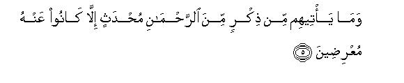
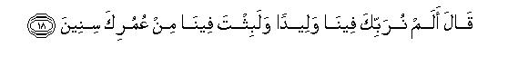
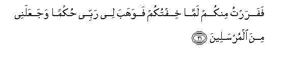
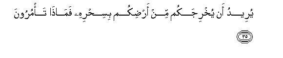
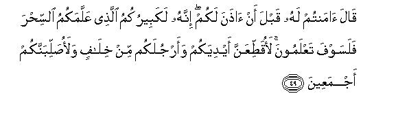
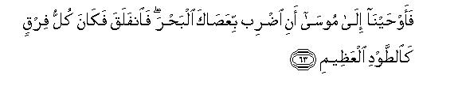
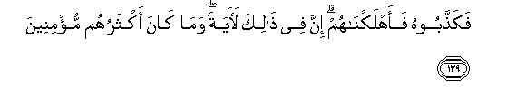
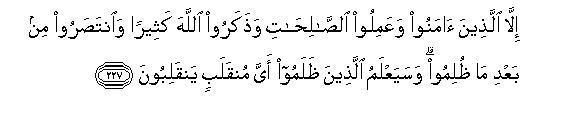

بسم الله الرحمن الرحيم
Sayyid Abul Ala Maududi - Tafhim al-Qur'an - The Meaning of the Qur'an
 26.
Surah Ash Shuaraa (The Poets)
26.
Surah Ash Shuaraa (The Poets)
The Surah takes its name from verse 224 in which the word Ash-Shu`araa' occurs.
The subject matter and the style show, and the traditions confirm, that it was revealed during the middle Makkan period. According to Ibn Abbas, Surah Ta Ha was revealed first, then Surah Al Waqiah, and then Surah Ash-Shu'araa.(Ruh-ul-Ma'ani, Vol. xx, p. 64). About Surah Ta Ha it is well known that it had been revealed before Hadrat Umar embraced Islam.
The background of the Surah is that the disbelievers of Makkah were persistently refusing, on one pretext or the other, to accept the message of Islam given by the Holy Prophet. Sometimes they would say that he did not show them any sign to convince them of his Prophethood; sometimes they would brand him as a poet or a sorcerer and mock his message; and sometimes they would ridicule his Mission, saying that his followers were either a few foolish youth, or the poor people and slaves - whereas, they argued, if his Mission had really some value for the people, the nobles and the elders would have accepted it first. Thus, while on the one hand, the Holy Prophet was becoming wearied by his efforts to show them rationally the errors of their creeds and prove the truth of the Doctrines of Tauhid and the Hereafter, the disbelievers, on the other, were never tired of adopting one kind of obduracy after the other. This state of affairs was causing great anguish and grief to the Holy Prophet.
Such were the conditions when this Surah was revealed. It begins with words of consolation to the Holy Prophet, implying, "Why do you fret for their sake?If these people have not believed in you, it is not because they have not seen any Sign, but because they are obdurate. They will not listen to reason they want to see a Sign which makes them bow their heads in humility. When this Sign is shown in due course of time, they will themselves realize that what was being presented to them was the Truth."
After this introduction, till verse 191, one and the same theme has been presented continuously, and it is said: "The whole earth abounds in such Signs as can guide a seeker after truth to Reality, but the stubborn and misguided people have never believed even after seeing the Signs, whether these were the Signs of the natural phenomena or the miracles of the Prophets. These wretched people have stubbornly adhered to their erroneous creeds till the Divine scourge actually overtook them." It is to illustrate this that the history of seven of the ancient tribes has been told, who persisted in disbelief just like the disbelievers of Makkah. In this connection, the following points have been stressed:
The Signs are of two kinds:(a) Those which are scattered all over the earth, and by seeing which an intelligent person can judge for himself whether what the Prophet is presenting is the Truth or not and (b) those which were seen by Pharaoh and his people, Noah's people, the Ad and the Thamud, Lot's people and the people of Aiykah. Now it is for the disbelievers to decide which kind of the Signs they are eager to see.
The mentality of the disbeliever has been the same throughout the ages; their arguments and their objections, and their excuses and subterfuges for not believing have been similar and ultimately the fates that they met have also been the same. Likewise, the Prophets in every age presented the same teachings, their personal character and their reasoning and arguments against their opponents were the same, and they were all similarly blessed with mercy by Allah Almighty. Both these patterns of behavior and conduct are found in history, and the disbelievers could themselves see as to which respective patterns they and the Holy Prophet belonged.
Allah is All Mighty, All Powerful and All Merciful at the same time. History contains instances of His Wrath as well as of His Mercy. Now, therefore, it is for the people to decide whether they would like to deserve Allah's Mercy or His Wrath.
Lastly, the discussion has been summed up, saying "O disbelievers, if at all you want to see the Signs, why should you insist on seeing those horrible Signs that visited the doomed communities of the past? Why don't you see the Qur'an which is being presented in your own language? Why don't you see Muhammad (upon whom be Allah's peace and mercy) and his Companions? Can the revelations of the Qur'an be the work of a satan or a jinn? Does the recipient of the Qur'an appear to be a sorcerer? Are Muhammad and his Companions no different from a poet and his admirers? Why don't you give up disbelief and search your hearts for their judgment? When in the heart of your hearts you yourselves believe that the Revelations of the Qur'an have nothing in common with sorcery and poetry, then you should know that you are being cruel and unjust, and will certainly meet the doom meant for the cruel and unjust."

In the name of Allah, the Compassionate, the Merciful.
[1-2] Ta Sin Mim. These are the verses of the lucid Book.1


[3-6] O Muhammad, you will perhaps consume yourself with grief because these people do not believe.2 If We will, We can send down from the sky a Sign before which they will bend down their necks in submission.3 Whatever new admonition comes to them from the Merciful, .they turn away from it. Now that they have rejected it, they will soon come to know (in various forms) the reality of what they have been mocking.4
[7-9] And have they never looked at the earth (and seen) how We have created in it a variety of fine vegetation in abundance? This surely has a Signs5 but most of them would not believe. The fact is that your Lord is Mighty as well as Merciful.6


[10-17] Relate to them the story of the time when your Lord called Moses,7 saying: "Go forth to the wicked people-the people of Pharaoh.8 Do they not fear?"9 Moses answered, "My Lord, I am afraid that they will treat me as a liar. My breast straitens and I am not eloquent of tongue: so appoint Aaron to Prophethood.10 And they have the charge of a crime against me, too; therefore, I fear that they will put me to death."11 Allah said: "No, never! Go, both of you, with Our Signs:12 We shall be with you, hearing everything. Go to Pharaoh and tell him, `We have been sent by the Lord of all Creation (with the message) that you should let the Israelites go with us."13

[18-19] Pharaoh said."Did we not bring you up as a child in our house?14 You lived quite a few years of your life among us, and then you did what you did,15 you are indeed an ungrateful man."

[20-21] Moses answered, "I did it inadvertently;16 then I fled from you out of fear; then my Lord bestowed wisdom and knowledge upon me,"17 and included me among the Messengers.
[22] As for the favor of which you have reminded me, the fact is that you had reduced the Israelites to bondsmen.18
[23] Pharaoh said,19 "And what is this Lord of all Creation?"20
[24] Moses answered, "The Lord of the heavens and the earth and of all that is between them, if only you care to believe!”21
[25] Pharaoh said to those around him, "Do you hear?"
[26] Moses said, "Your Lord as well as Lord of your forefathers who have gone before."22
[27] Pharaoh said (to all those present), "This messenger of yours, who has been sent to you, seems to be utterly mad."
[28] Moses said, "(He is) Lord of the east and the west and of all that is between them, if only you people have any common-sense" 23
[29] Pharaoh said, "If you take any one other than me as a deity, will cast you among those who are rotting in the prisons."24
[30] Moses said, "Even if I bring forth a convincing thing?"25
[31] Pharaoh replied, "Well, bring it if you are truthful."26
[32-33] (No sooner had he uttered these words than) Moses cast down his staff, and suddenly it became a serpent.27 Then he drew out his hand (from the armpit) and it was shining bright for all the spectators.28

[34-35] Pharaoh said to the chiefs around him, "This fellow is certainly a skilled magician: he wants to drive you out of your land by means of his magic.29 Now, what is your command?"30
[36-37] They said, “Detain him and his brother for a while, and send forth heralds to the cities to summon every skilled magician into your presence.”
[38-40] So, the magicians were gathered together on an appointed day and time,31 and the people were asked, "Would you come to the gathering?32 We may perhaps still follow the magicians way if they are dominant."33
[41] When the magicians arrived for the contest, they said to Pharaoh, "Shall we have rewards if we win?"34
[42] He replied, "Of course,and then you will be included among those nearest to me."35

[43] Moses said, “Cast down what you have to cast down.”
[44-48] They forthwith cast down their cords and staffs and said. "By Pharaoh's honor, we shall surely win"36 Then Moses cast down his staff, and lo! It started devouring up their false devices. At this, all the magicians fell down in prostration, and cried out, "We have believed in the Lord of all creation the Lord of Moses and Aaron!"37

[49] Pharaoh said, "You have believed in Moses even before I should have permitted you! He must be your chief who has taught you magic38 Well, you shall soon come to know: I shall have your hands and feet cut off on opposite sides and shall crucify you all"39

[50-51] They replied, "We care not: we shall pass into our Lord's presence and we expect that our Lord will forgive us our sins because we are the first to believe."40
[52-59] We inspired Moses with this:41 "Set off with My servants by night, for you will be pursued."42 At this, Pharaoh sent out heralds to the cities (for mobilization, saying): "These are but a handful of people, who have provoked us much; and we are a host who are always on our guard."43 Thus did We draw them out from their gardens and their water-springs and their treasure-houses and fine dwellings.44 This is how they were dealt with, while (on the other hand) We made the Children of Israel inherit all these things.45


[60-66] In the morning these people set out in pursuit of them. When the two hosts came face to face with each other, the companions of Moses cried out: "We are overtaken!" Moses said, "No, never! With me indeed is my Lord: He will surely guide me."46 We inspired Moses with the Command: "Smite the sea with your staff." The sea parted forthwith and its each part stood like a mighty mountain.47 And We led to the same place the other host, too. We saved Moses and all his companions, and drowned the others.48
[67-68] There is indeed a Sign in this,49 but most of these people would not believe. The fact is that your Lord is Mighty as well as Merciful.


[69-89] And tell them the story of Abraham50 when he asked his father and his people: "What are these things that you worship?"51 They answered, "These are idols which we worship and we serve them devotedly."52 Abraham asked, "Do they hear you when you call on them? Or ' do they bring any good or harm to you?" They replied, "No, but we have found our elders doing the same."53 At this, Abraham said, "Have you ever seen (with open eyes) the things which you and your elders have been worshiping?54 They are all enemies to me,55 except One Lord of the worlds,56 Who created me,57 then He it is Who guides me, Who gives me food and drink, and Who gives me health when 1 am ill,58 Who will cause me to die and then will give me life again, and of Whom I expect that He will forgive me my errors on the Day of Judgment."59 (After. this Abraham prayed:) "My Lord, bestow upon me knowledge and wisdom60 and join me with the righteous,61 and grant me true renown among posterity,62 and include me among the inheritors of the blissful Garden, and forgive my father, for indeed he is from among those who have strayed,63 and do not disgrace me on the Day when everybody will be raised back to life,64 when neither wealth will avail anybody, nor children, except that one should appear before Allah with a sound heart."65
[90-102] (On that Day)66 Paradise will be brought close to the righteous, and Hell will be set open before the straying ones,67 and they will be asked: "Where are those whom you worshiped instead of Allah? Are they of any help to you, or even to themselves ?" Then these deities and those erring people, and the hosts of Satan, all will be hurled into it, one upon the other.68 Therein they will dispute with one another, and these erring people will say (to their deities): "By God! We had certainly strayed when we held you equal in rank with the Lord of the worlds, and they were criminals indeed who led us astray.69 Now we have neither any intercessor70 nor any true friend.71 Would that we were given a chance to return (to the world) so that we became believers.72
[103-104] Indeed there is a great Sign in this,73 but most of these people would not believe. The fact is that your Lord is Mighty as well as Merciful.

[105-120] Noah's people74 rejected the Messengers.75 Remember the time when their brother Noah said to them: "Do you not fear?76 I am a Messenger to you worthy of full trust:77 so fear Allah and obey me:78 I do not ask of you any reward for this duty, for my reward is with the Lord of the worlds;79 therefore, you should fear Allah and obey me (without hesitation)."80 They replied, "Should we believe in you, whereas the meanest of the people have become your followers?"81 Noah said, "I have no knowledge of what they do: their account is the concern of my Lord : would that you had used some common-sense!82 I am not here to drive away those who believe; I am only a plain Warner."83 They said, "O Noah, if you do not desist from this, you will surely become one of the accursed."84 Noah prayed: "My Lord, my people have treated me as a liar:85 now settle the accounts between us, and deliver me and the believers with me to safety."86 At last, We rescued him and his companions in a laden Ark,87 and then drowned all the others.
[121-122] Indeed there is a Sign in this, but most of these people would not believe. The fact is that your Lord is Mighty as well as Merciful.

[123-127] `Ad rejected the Messengers.88 Remember the time when their brother Hud said to them,89 "Do you not fear? I am a Messenger to you worthy of full trust: so fear AIlah and obey me. I do not ask of you any reward for this duty, for my reward is with the Lord of the worlds.

[128-139] What! You erect for mere pleasure, a monument on every high spot,90 and build huge castles as if you were immortal;91 and when you seize somebody, you seize him like a tyrant.92 So fear Allah and obey me. Fear .Him Who has bestowed on you all that you know: He gave you cattle and children and gardens and water-springs. I fear the torment of a dreadful Day for you." They replied, "Whether you admonish us or not, it is the same for us: such things have been said in the past as well,93 and we are certainly not going to be chastised." At last, they rejected him, and We destroyed them.94
[140] Indeed there is a Sign in this, but most of these people would not believe. The fact is that your Lord is Mighty as well as Merciful.

[141-158] Thamud rejected the Messengers.95 Remember the time when their brother Salih said to them, "Do you not fear? I am a Messenger to you worthy of full trust,96 so fear Allah and obey me. I do not ask of you any reward for this duty, for my reward is with the Lord of the worlds. Will you be left in security amidst all that is around you here?97 In the gardens and the water-springs? In the corn-fields and the date-groves laden with juicy fruit?98 You proudly carve out dwellings in the hills.99 Fear Allah and obey me, and do not follow the transgressors who spread mischief in the land and reform nothing."100 They replied, "You are only an enchanted person.101 You are no more than a man like us: bring forth a sign if you are truthful."102 Salih. said, "Here is a she-camel.103 One day will be for her to drink, and one day for you all to take water.104 Do not at all molest her; otherwise you will be overtaken by the torment of a dreadful day." Yet they hamstrung her,105 and then became regretful, for the torment overtook them.106 Indeed there is a Sign in this, but most of these people would not believe.
[159]The fact is that your Lord is Mighty as well as Merciful.
[160-164] The people of Lot rejected the Messengers.107 Remember the time when their brother Lot said to them, “Do you not fear? I am a Messenger to you worthy of full trust: so fear Allah and obey me. I do not ask of you any reward for this duty, for my reward is with the Lord of the worlds.”
[165-173] “Do you go to the males from the creatures of the world,108 and leave that which your Lord has created for you in your wives?109 You have indeed transgressed all limits.”110 They said, “O Lot, if you do not desist from this, you will surely be included among those who have been expelled from our towns.”111 He said, “I am certainly one of those who abhor your wickedness. My Lord, deliver me and my people from their wicked deeds.”112 At last, We delivered him and all his people except an old woman who was of those who were left behind.113 Then We destroyed all the rest of them, and rained on them a horrible rain, which fell on those who had been warned.114
[174-175] Indeed there is a Sign in this, but most of these people would not believe. The fact is that your Lord is Mighty as well as Merciful.

[176-189] The people of Aiykah rejected the Messengers.115 Remember the time when Shu`aib said to them, "Do you not fear? I am a Messenger to you worthy of full trust: so fear Allah and obey me. I do not ask of you any reward for this duty, for my reward is with the Lord of the worlds. Give full measure and do not give people less than what is due to them; weigh with even balance and do not cheat people of their goods; and do not spread evil in the land, and fear Him Who has created you and those who have gone before you." They said, "You are only an enchanted person and are no more than a man like us: we consider you to be an utter liar. However, if you are truthful, cause a fragment of the sky to fall down upon us." Shu'aib said, "My Lord knows whatever you are doing."116 They treated him as a liar. At last, the torment of the Day of Canopy overtook them,117 and it was the torment of an extremely dreadful day.

[190-191] Indeed there is a Sign in this, but most of these people would not believe. The fact is that your Lord is Mighty as well as Merciful.


[192-200] This118 (Book) has been revealed by the Lord of the worlds.119 The trustworthy Spirit120 has come down with it upon your heart so that you may become one of those who are (appointed by God) to warn (the people) in plain Arabic language;121 and this is also contained in the Scriptures of the former people.122 Is it not a Sign for the people (of Makkah) that the learned men of the Children of Israel know it?123 (But they are obdurate to the extent) that even if We had sent it down to some non Arab, and he had recited this (discourse in lucid Arabic) before them, they would still not have believed in it.124 Likewise, We have caused this (Qur'an) to pass through the hearts of the criminals.125
[201-203] They do not believe in it until they see the painful torment.126 Then, when it overtakes them unawares, they say, "May we be given some respite ?"127
[204-207] Are these people clamoring for Our torment to be hastened? Have you considered that even if We grant them the respite to enjoy life for years, and then there comes down on them that with which they are being threatened, the provisions of life that they have got, will not avail them anything?128

[208-209] (Note it that) We have never destroyed a habitation unless it had its warners to administer admonition; and We have never been unjust.129
[210-212] This (lucid Book) has not been brought down by satans,130 nor does this work behoove them,131 nor are they able to do it.132 They have indeed been kept out of its hearing.133

[213-220] So, O Muhammad, do not invoke any other deity besides Allah lest you should also be included among those who will be chastised.134 Warn your nearest kinsfolk135 and treat with kindness those of the believers who follow you, but if they disobey, tell them: "I am not responsible for what you do."136 And put your trust in the Mighty and Merciful One,137 Who watches you when you get up,138 and when you move about among those who prostrate themselves in worship.139 He is indeed All-Hearing, All-Knowing.
[221-223] O people, shall I tell you upon whom the satans come down? They come down upon every sinning forgerer.140 They whisper hearsay into ears, and most of them are liars.141

[224-227] As for the poets, they have the erring people to follow them.142 Do you not see that they stray aimlessly in every valley?143 and say that which they do not practice themselves.144 save those who believed and did good works and remembered Allah much, and when they were treated unjustly, they only defended themselves (and did not show vindictiveness).145 And the iniquitous people will soon come to know what punishment awaits them.146
1That is, the verses being presented in this Surah are of that Book, which presents and explains its subject-matter clearly and plainly so that every reader and listener may easily understand what it invites to, what it enjoins and what it forbids, and what it regards as true and what as false. To believe or not to believe is a different matter; but no one can have the excuse that he could not understand the teachings of the Book and its injunctions and prohibitions.
"Al-Kitab-ul-Mubin" also has the meaning that the Qur'an is, beyond any doubt, a Divine Book. Its language, its diction and themes, the facts presented by it and the background of its revelations, all testify to the fact that this is indeed the Book of the Master of all Creation. In this sense, its every sentence is a Sign and a miracle. As such, any person who has common sense has no need of any other Sign than the verses of this Book for believing in the Prophethood of Muhammad (upon whom be Allah's peace and blessings).
Thisbrief introductory sentence, which covers both these meanings, has a close connection with the subject-matter of this Surah. The disbelievers of Makkah demanded a miracle from the Holy Prophet so as to be convinced that the message he gave was really from Allah. In answer to that, it has been said that if some one really wanted a Sign for believing in the Prophet, he should study the verses of this Book. Then, the disbelievers accused the Holy Prophet of being a sorcerer. This charge has been refuted by saying that the Qur'an has nothing ambiguous or mysterious in it; but it plainly puts forward all its teachings which cannot be the creation of a poet or a sorcerer's imagination.
2The words bakhi'un-nafsaka literally mean: "You would kill yourself." The verse in fact describes the extreme anguish, anxiety and grief of the Holy Prophet over the Makkan disbelievers' ways of deviation, moral degradation, and obduracy and opposition to his message of reform. Sometimes it seemed as if his grief and mental suffering for their sake would cause his death. This state of the Holy Prophet has been referred to at other places in the Qur'an as well, for instance in AI-Kahf: 6, thus: "Well, O Muhammad, it may be that you will consume your life for their sake out of sorrow if they do not believe in this message. And in Al-Fatir: 8, thus:" ....let not your life be consumed in grief for their sake."
3That is, "It is not at all difficult for Allah to send down a Sign which would make all the disbelievers yield and submit. If, however, He does not send one, it does not mean that such a thing is beyond His powers, but the reason is that . belief under compulsion is not acceptable to Him. Allah wants that people should use their common-sense and recognize the Truth through the verses of the Divine Book and the Signs which are scattered all over the universe and are found even in their own selves. Then, when their hearts are satisfied that the message of the Prophets contains the Truth, and the beliefs and the creeds which are opposed to it, are false, they should willingly give up falsehood and adopt the Truth. This voluntary belief, acceptance of the Truth and rejection of falsehood, is what Allah demands from man. It is for this reason that Allah has bestowed upon man choice and free will, and freedom to follow any way, right or wrong, that he pleases. For the same reason He has placed in his nature both the tendencies, towards good and towards evil, and opened up before him both the ways, to piety and to sin. For the same purpose He has given Satan the freedom and respite to mislead him and has made arrangements of Prophethood, Revelation and invitation to goodness to guide him to the right way, and has placed man on trial to see whether he adopts the way of belief and obedience or of disbelief and sin. On the other hand, if Allah had adopted a method of coercing people to believe and obey, it would have defeated the very purpose of the trial and test. Then there was no need to send down the Signs for the purpose, but He would have created man with a pure nature, without any inclination for evil, disbelief and sin, and made him obedient by birth like the angels. This has been referred at several places in the Qur'an, for instance in Yunus: 99: ` Had your Lord willed all the dwellers of the earth would have believed in Him;" and in Hud: 118: '"Your Lord could have made mankind one community had He so willed, but now they will continue to follow different ways, but only those on whom Allah has His mercy (escape wrong ways). It will be so because He has created them for this (very freedom of choice and action)." For further explanation, see E.N.'s 101,102 of Yunus and E.N. 116 of Hud.
4That is, the people who show lack of feeling and interest for every rational attempt made to bring them to the right way, cannot be made to believe forcibly by sending down Signs from heaven. They only deserve to be shown their evil end after they have been duly warned and shown guidance, which they not Only treated with indifference but rejected scornfully. This evil end can be shown to them in several ways:
(1) The Truth which they have bitterly opposed and scoffed at should prevail in the world in front of their very eyes in spite of their antagonism. (2) They should be visited by a painful torment and eliminated from the world. (3) Alter a few years of misguided life they should meet death and see for themselves that what they had been following wholeheartedly throughout their lives was nothing but falsehood and what the Prophets had been presenting was the very Truth, which they had been scoffing at. Thus the evil end can take place differently for different people as it happened in the past.
5That is, the seeker after truth does not have to look far for a Sign. If only he sees with open eyes the phenomena of vegetation around him, he will be able to judge for himself whether the reality about the system of the world (i.e., Tauhid) which was being presented by the Prophets is true, or the speculations of the polytheists and atheists. From the variety and abundance of creation found on the earth, the various elements and factors supporting it, the laws of nature causing it to grow and flourish, and the accord and harmony existing between its characteristics and the countless needs and demands of innumerable creatures, only a fool will conclude that all this is happening automatically without the wisdom, knowledge, power and design of an All-Mighty, All-Powerful Creator. Obviously, many masters and gods could not have by any device arranged and produced the perfect harmony and accord between the soil, the sun and the moon, and the animal and plant life produced with their help and the needs of a great variety of creatures living on the earth. A sensible person, unless he is prejudiced and biased, cannot help feeling convinced that these are the clear signs and proofs of the existence of One God, and there is no further need of a miracle to convince him of the reality of Tauhid.
6That is, "He has the power and ability to annihilate completely anyone whom He wills to punish, but it is His mercy that He dces not hasten to punish the wrung-doer, but gives him respite for years and centuries to allow him time to think, understand and mend his ways, and is ever ready to forgive the sins of a lifetime if the sinner offers repentance but once.
7After a brief introduction, historical events have been presented beginning with the story of Prophet Moses and Pharaoh, and attention has been drawn specifically to the following points:
(1) The conditions under which Prophet Moses had to work were much harsher and more severe than those faced by the Holy Prophet Muhammad (Allah's peace be upon him). Prophet Moses belonged to a slave community very much suppressed by Pharaoh and his people. In contrast to them, the Holy Prophet was a member of the clan of Quraish and his family enjoyed an equal status with the other clans. Then Prophet Muses had been bred and brought up in the house of Pharaoh and after remaining a fugitive for ten years due to a charge of murder, he was commanded to go before the same king from whom he had fled for life. The Holy Prophet did not have to face any such situation. Then the empire of Pharaoh was the most extensive and powerful empire of the time and the meagre power of the Quraish had no comparison with it. In spite of that Pharaoh could not do any harm to Prophet Moses and ultimately perished in the conflict. From this Allaln wanted the Quraish to learn this lesson: "None can defeat the one who has Allah to help him? When Pharaoh with all his might became helpless against Moses, how can you, O poor Quraish, succeed against Muhammad (upon whom be Allah's peace and blessings)'?
(2) There could not be clearer and more manifest Signs (miracles) than those which were shown to Pharaoh through Moses. Then in an open contest with the magicians before a gathering of hundreds of thousands of people to meet the challenge of Pharaoh himself, it had been conclusively demonstrated that what was presented by Moses, was not magic. The skillful magicians who were themselves Egyptians and had been summoned by Pharaoh himself bore witness to the fact that turning of Moses' staff into a serpent was a real change of nature, which could only happen through a Divine miracle, and not by any trick of magic. Then the magicians' believing in Moses immediately, even at the risk of life, proved beyond any doubt that the Sign presented by Moses was a miracle and not magic. Yet the disbelievers were not inclined to believe in the Prophet. Now how can you, O Quraish, say that you will believe only when you are shown a perceptible miracle and a physical Sign '? As a matter of fact, if a person is free from prejudice, false sense of prestige and vested interest, and has an open mind to appreciate the distinction between truth and falsehood, and is prepared to give up falsehood for the truth, he does not stand in need of any other signs than those found in this Book, in the life of the one presenting it and in the vast universe around him. On the contrary, an obstinate person, who is not interested in the truth, and who because of selfish motives is determined not to recognize and accept any such truth as may clash with his interests, will not be prepared to believe after seeing any sign whatever, even if the earth and the heaven are turned upside down in front of his eyes .
(3) 'the tragic end of such obstinacy as met by Pharaoh is not something for which other people should become so impatient. Those who do not believe even after seeing with their own eyes the Signs of Divine power have inevitably to meet a similar fate. Therefore, instead of learning a lesson why do you insist on seeing such a dreadful sign? For comparison, see AIA'raf: 103-137, Y'unus: 75-92, Bani Isra'il: 101-104, and Ta Ha: 9-79.
8The epithet of "the wicked people" describes the extremely wicked character of the people of Pharaoh.
9That is, "O Moses! Just see how these people are perpetrating crime and injustice presuming that they are all-powerful in the land having no fear of God, Who will call them to account in the Hereafter".
10The sentence, "My breast straitens", shows that Prophet Moses was somewhat hesitant of going alone on such a difficult mission, and also had the feeling that he was not eloquent in speech. That is why he begged Allah to appoint Aaron too, as messenger to assist him who, being more vigorous in speech, could support and strengthen him as and when the need arose. It is just possible :hat in the beginning, the Prophet Moses might have begged that Aaron be appointed to Prophet hood instead of him, but later when he felt that Allah willed him to be appointed to that position, he might have appealed that Aaron should at least be made his counselor and assistant. We say this because here Prophet Moses is not praying for Aaron to be made his counselor, but says, "Appoint Aaron to Prophet hood." On the other hand, in Surah Ta Ha, he says, "Appoint for me a counselor from my family-(let it be) my brother Aaron." Then in Surah Al Qasas, he says, "My brother Aaron is more vigorous in speech than myself, so send him as an assistant with me to confirm (and support) me." From this it appears that these two requests were made later, but originally Prophet Moses had begged Allah to appoint Aaron to Prophet hood instead of himself.
The Bible has a different story to tell. According to it, Prophet Moses, fearing that he would be rejected by the people of Pharaoh, and putting forward the excuse of his faltering speech, had declined to accept his appointment to prophet hood on the pretext that he lacked vigor and eloquence in speech : "O my, Lord, send, I pray Thee, by the hand of him whom thou wilt send." (Exodus, 4: 13), Then Allah, of His own will, appointed Aaron to be his assistant and persuaded them: to go together before Pharaoh. (Exodus, 4: 1-13). For further details, see E.N. 19 of Ta Ha.
11The allusion is to the incident of Prophet Moses giving a blow to an Egyptian, who was fighting with an Israelite, and thus causing his death. Then as soon as Moses came to know that the report had reached Pharaoh and his people and they were planning to take revenge, he fled the country and took refuge in Midian. (See Al-Qasas: 15-21) Now when after a period of almost ten years of hiding he was suddenly called upon and commanded to go before Pharaoh, who had already a charge of murder against him, with the message, Prophet Moses rightly felt apprehensive that he would immediately be involved in the murder case even before he was able to convey the message as commanded by Allah.
12Here by "Signs" are meant the miracles of the staff and the shining hand, which were liven to Moses. For details see Al-A`raf: 106-117, Ta Ha: .1723, An-Naml: 7-14, and Al-Qasas: 31-32).
13The Mission of the Prophets Moses and Aaron was twofold: First, to invite Pharaoh to the worship and obedience of Allah which has been the foremost aim of the Mission of every Prophet, and secondly, to liberate the Israelites from the bondage of Pharaoh, which was specifically assigned to them. The Qur`an has mentioned sometimes only the first part of their Mission (as in Surah An-Nazi`at) and sometimes only the second.
14This remark of Pharaoh shows that he was not the same Pharaoh who had brought up Moses in his house, but his son. Had he been the same Pharaoh, he would have said, "I brought you up." But, on the contrary. he says, "You were brought up among ourselves." For a detailed discussion, see E.N.'s 85-93 of Al A'raf.
15The allusion is to the incident of murder committed by Moses accidentally.
16The word dalalat does not always mean "straying away", but it is also used in the sense of ignorance, folly, error, forgetfulness, inadvertence, etc. As mentioned in Surah Al-Qasas, Prophet Moses had only given a blow to the Egyptian (Copt) when he saw him treating an Israelite cruelly. A blow does not cause death, nor is it given with the intention of causing death. It was only an accident that the Egyptian died. As such, it was not a case of deliberate murder but of accidental murder. A murder was committed but not intentionally, nor was any weapon used, which is usually employed for murder, or which can cause murder.
17The word hukm means wisdom, knowledge or authority, which is granted by Allah to a Prophet so that he may speak with confidence and power.
18That is, "If you had not been unjust and cruel to the Israelites. I should not have been brought to your house for upbringing. It was only on account of your barbarism that my mother put me in a basket and cast it into the river. Had it not been so, I should have been happily brought up in my own house. Therefore, it does not behoove you to remind me of your favor of bringing me up in your house."
19Here the details that Prophet Moses went before Pharaoh as the Messenger of the Lord of the universe and conveyed to him His message, have been omitted, and only the conversation that took place between them has been related.
20This question of Pharaoh concerned the assertion of Moses that he had been sent by the Lord, Master and Ruler of all Creation with the message that he should let the Israelites go with him. This was a political message. It implied that the One, Whom Moses claimed to represent, possessed authority and sovereign rights over all the people of the world including Pharaoh and that he was not only encroaching upon his sphere of sovereignty as Supreme Ruler, but was also sending him the Command that he should hand over a section of his subjects to the representative appointed by Him, so that he should take them out of his kingdom. That is why Pharaoh asked, "Who is this Master and Ruler of all Creation who is sending such a command to the king of Egypt through an ordinary subject of his kingdom?"
21That is, "I have not been sent by any mortal king ruling in the world, but I come from Him Who is the Owner of the heavens and the earth. If you believe that, there is a Creator and Master and Ruler of this universe, it should not he difficult for you to understand who is the Lord of all Creation."
22These words were addressed to the chiefs of Pharaoh, whom he had asked, "Do you hear?" Prophet Moses said: "I do not believe in the false gods who exist today, but did not exist yesterday, or who existed yesterday but do not exist today. This Pharaoh, whom you worship as your lord today, did not exist yesterday, and the Pharaohs whom your elders worshiped yesterday, do not exist today; whereas I believe in the sovereignty and authority of that Lord Who is both your Lord and Pharaoh's Lord as much today as He was your elders' Lord before this."
23That is, "You regard me as a mad person, but if you think you are wise people, you should yourself decide as to who is the real lord: this wretched Pharaoh who is ruling over a small piece of earth, or He Who is the Owner of the east and the west and of everything bounded by the east and the west including the land of Egypt. I believe in His sovereignty alone and have been sent to convey His message to a creature of His."
24To understated and appreciate this conversation fully, one should bear in mind the fact that as it is today, in the ancient times too, the concept of "deity" was confined to its religious sense only. The deity was meant to be worshiped and presented offerings and gifts, and because of its "supernatural powers" and authority the people were to pray to it for help and fulfillment of their desires. But a deity's being supreme legally and politically also and his right to enjoin anything he pleased in the mundane affairs and man's duty to submit to his commands as to superior law, has never been recognized by the so-called worldly rulers. They have always claimed that in the mundane affairs, they alone possess absolute authority and no deity has any right to interfere in the polity and law prescribed by them. This very thing has been the real cause of the conflict between the Prophets and their righteous followers, on the one hand, and the worldly kingdoms and governments on the other. The Prophets have been trying their utmost to make the worldly rulers acknowledge the sovereign and absolute rights of the Lord of the Worlds, but they in return have not only been claiming sovereign powers and rights for themselves, but have been considering every such person as a criminal and rebel, who has held someone else as a deity in the political and legal sphere. With this background one can easily understand the real significance of Pharaoh's words. Had it been a question of mere worship and offerings, he would have least bothered that Moses, forsaking all gods, regarded only Allah, the Lord of all Creation, as worthy of those rights. if Moses had invited him to serve Allah alone, he would not have felt provoked and offended. At the most he would have refused to give up the creed of his forefathers, or would have challenged Moses to have a debate with his own religious scholars. But what caused him provocation was that Prophet Moses was presenting himself as the representative of the Lord of all Creation and was conveying to him a political command as if he was a subordinate ruler and the representative of the superior authority was demanding obedience from him to the command. In this sense, he was not prepared to acknowledge any other political or legal authority, nor allow any of his subjects to acknowledge anybody instead of himself as the supreme ruler. That is why he challenged the teen "Lord, of all Creation", for the message sent by Him clearly reflected sovereignty in the political and trot in the mere religious sense. Then, when Prophet Moses explained over and over again what he meant by the "Lord of all Creation", Pharaoh threatened that if he held any one other than him as sovereign in the land of Egypt, he would be cast into prison.
25That is, "Will you still deny me and send me to prison, even if I present a convincing Sign to prove that I am really the Messenger of God, Who is Lord of all Creation , Lord of the heavens and the earth and Lord of the east and the west?
26This reply of Pharaoh shows that he was not in any way different from the common polytheists of the ancient and modern times. Like all other polytheists he believed in Allah's being the highest Deity in the supernatural sense. Who wielded greater power and authority than all other gods and goddesses. That is why Prophet Moses said to him, "If you do not believe that I have been appointed by Allah, I can present such clear Signs as will prove that I have really been sent by Him", and that is why Pharaoh said, " I f you are true in your claim, come out with your Sign", otherwise if he had any doubt about the existence of Allah or His being Master of the universe, he would not have asked for the Sign.
27Thub an means a serpent. At other places, the Qur'an has used hayyatun (snake) and jaann (a small snake) to describe the snake of the staff. The interpretation given by Imam Razi is that the snake of the staff looked like a serpent from its big size and has been called jaann on account of its swift movement which is characteristic of small snakes.
28Some commentators under the influence of the Israelite traditions have translated baida' as white and have taken it to mean that the healthy hand when drawn out of the armpit became white as if struck by leprosy. But commentators like Ibn Jarir, Ibn Kathir, Zamakhshari, Razi, Abul Sa'ud `Imadi, Alusi and others are agreed that baida' here means shining and bright. As soon as Prophet Moses took out his hand from the armpit, it made the whole place bright as if by the sun. For further explanation, see E.N. 13 of Ta Ha.
29The impact of the two miracles can be judged from the fact that a moment before this Pharaoh was calling Moses a mad man, because he had claimed to be a Prophet and had had the boldness to openly demand release of the Israelites. He was also threatening Moses that if he took somebody else as Lord instead of him, he would cast him into the prison for life. But, after he had seen the Signs, he became so terror-stricken that he felt his kingdom to be at stake, and in his contusion he did not realize that he was talking meaninglessly to his servants in the court. Two men from the oppressed community of the Israelites were standing before the most powerful ruler of the time: they had no military force with them, they belonged to a weak and lifeless community, and there was no sign of any rebellion in any corner of the country, nor did they have the support of any foreign power, yet as soon as the miracles of the snake of the staff and the shining hand were shown, the tyrant desperately cried out: "These two men want to seize power and deprive the ruling class of their sovereign rights!" His apprehension that Moses would do so by force of his magic again reflected a confused state of mind, for nowhere in the world has a political revolution been ever brought about, nor a country taken, nor a war won merely by force of tragic. There were many magicians in Egypt, who could perform masterly tricks of tragic, but Pharaoh knew it well that they were nonentities because they performed magic only for the sake of rewards.
30This sentence further shows Pharaoh's perplexed state of mind. A moment before he was the deity of his courtiers and, now, struck by awe, the deity is asking his servants as to what he should do to meet the dangerous situation.
31As already mentioned in Surah Ta Ha (v. 59), the day fixed for the purpose was the day of the national festivities of the Egyptians so that large crowds of people coming to the festivals from every part of the country should also witness the grand "contest which was to be held in the broad daylight so that the spectators could see the performances clearly.
32That is, besides proclamation heralds were sent to urge the people to come and see the contest. It appears that the news of the miracle shown by Prophet Moses before the packed court had reached the common people also, and Pharaoh fearing that the people at large might be influenced, wanted that they should come together in large numbers so that they could see for themselves that turning a staff into a snake had nothing extraordinary in it because such a trick could be performed by every common magician of their own country as well.
33This sentence confirms the idea that those who had witnessed the miracle of Moses in the royal court and those who had heard of it reliably outside were losing faith in their ancestral religion, and now the strength of their faith depended on this that their own magicians also should give a performance similar to that of Moses. That is why Pharaoh and his chiefs themselves regarded this contest as a decisive one, and their heralds were busy moving about in the land, impressing on the people that if the magicians won the day, they would yet be secured against the risk of being won over to Moses' religion, otherwise there was every possibility of their creed's being exposed and abandoned for ever.
34Such was the mentality of the supporters of the polytheistic creed of the land, whose only ambition was to win rewards from the king if they won the day.
35This was then the highest honor that the king could confer on those who served the creed best Thus, at the very outset, Pharaoh and his magicians manifested by their conduct the great moral distinction that exists between a Prophet and a magician. On the one side, there stood that embodiment of courage and confidence, who in spite of belonging to the suppressed community of the Israelites and having remained to hiding for ten long years on account of a charge of murder, had suddenly appeared in Pharaoh's court to proclaim fearlessly that he had been sent by the Lord of all Creation and demanded release of the Israelites.
He did not even feel the least hesitation in starting a discussion face to face with Pharaoh not caring in' the least for his threats. On the other side, there were the wretched magicians wholly lacking in moral fiber, who had been summoned by Pharaoh himself to help secure the ancestral religion, and yet they were begging for rewards in return for the services. And when they are told that they will not only be given rewards but will also be included among the royal courtiers, they feel greatly overjoyed. These two types of characters clearly bring out the difference between the grand personality of a Prophet and that of a mere magician. Unless a man loses all sense of modesty and decency, he cannot have the audacity to call a Prophet a magician.
36As soon as they cast down their cords and staffs, these started moving like so many snakes- towards Moses. This has been described in greater detail at other places in the Qur'an. According to Al-A`raf: 116: "When they threw down their devices, they bewitched the eyes of the people and terrified their hearts: for they had indeed produced a great magic." And according to Ta Ha: 66, 67: "Suddenly it so appeared to Moses that their cords and staffs were running about by the power of their magic, and Moses' heart was filled with fear."
37This was not merely an acknowledgment of their defeat at the hands of Moses as though he was a greater magician, but their falling prostrate in submission to Allah, Lord of the universe, was an open declaration before thousands of Egyptians that what Moses had brought about was no magic at all, but a manifestation of the powers of Allah, Almighty.
38This only shows the extreme obstinacy and obduracy of Pharaoh, who even after witnessing a clear miracle and the testimony of the magicians on it, was still insisting that it was magic. But according to Al-A`raf: 123, Pharaoh said, "Indeed it was a plot you conspired in the capital to deprive the rightful owners of their power." Thus he tried to make the people believe that the magicians had yielded to Moses not because of the miracle but due to a conspiracy with Moses before they entered the contest, so that they might seize political power and enjoy its fruits together.
39This horrible threat was held out by Pharaoh to justify his thinking that the magicians had entered a conspiracy with Moses. He thought that the magicians, in order to save their lives, would confess the plot and thus the effect produced by their falling prostrate and believing in Moses in front of thousands of spectators would be gone.
40That is, "We have to return to our Lord in any case. If you kill us now, we shall present ourselves before Him just today, and we have nothing to worry in this. We rather expect that we shall be forgiven our sins and errors because out of this entire gathering we were the first to believe as soon as reality became known to us."
This reply of the magicians made two things absolutely clear to the people who had been gathered together by Pharaoh heralds
First, that Pharaoh was a dishonest obdurate and deceitful person. When he saw that Moses had come out successful in the contest which he himself had arranged to be decisive, he concocted a plot and forced the magicians to confess it by coercion and threats. Had there been any truth in it, the magicians would not have readily offered to have their hands and feet cut off on opposite sides and get crucified. The fact that the magicians remained steadfast and firm in their belief even in the face of such a horrible threat, proves that the accusation of plotting a conspiracy against Pharaoh was baseless. The fact was that the magicians being experts in their art had realized that what Moses had displayed was no magic, but surely a manifestation of the powers of Allah, Lord of the universe.
Secondly, thousands of the people who had gathered together from all corners of the land had themselves witnessed the great moral change that had occurred in the magicians as soon as they professed belief in the Lord of the universe. The same magicians who had been summoned to strengthen and secure the ancestral creed by means of their magic and who, a minute before, were humbly begging Pharaoh for rewards had now become so bold and ennobled spiritually that they would not take any notice of Pharaoh's powers and his threats and were even prepared to face death and extreme physical torture for the sake of their Faith. Thus psychologically there could not be a better occasion to expose the polytheistic creed of the Egyptians in their own eyes and help impress the truth of Moses' religion in the minds of the people.
41The mention of migration here does not mean that Prophet Moses and the Israelites were immediately ordered to leave Egypt. The history of the intervening period has been related in Al-A`raf: 127-135 and Yunus: 83-89, and a part of it has been mentioned in Al-Mu`min: 23-46 and Az-Zukhruf: 46-56. Here the story is being cut short and only the final phase of the conflict between Pharaoh and Prophet Moses is given to show the tragic end of Pharaoh who had remained obdurate even after witnessing clear Signs and the ultimate success of Moses who had Divine support behind his message.
42The warning that "you will be pursued" shows the wisdom of the instruction to set off during the night. The idea was that before Pharaoh came out with his hosts to pursue them, they should have gone far enough so as to be out of reach of him. It should be borne in mind that the Israelites were not settled in one place in Egypt but were scattered in cities and habitations all over the country and lived in large numbers especially in the land between Memphis and Rameses called Goshen. (See map in Vol . III, p. 31, on the Exodus of the Israelites). It appears that when Prophet Moses was commanded to leave Egypt, he must have sent instructions to the Israelite habitations telling the people to make necessary preparations' for migration and he must have also fixed a night for them to leave their homes for the exodus.
43All this shows that Pharaoh in fact was terror-stricken, but was trying to hide his fear under cover of fearlessness. On the one hand, he was mobilizing forces to face the situation; on the other, he wanted to show that he was undaunted and undeterred, for a despotic ruler like Pharaoh could have no danger from a suppressed and slave community which had been living in disgrace for centuries. That is why his heralds made the people believe that the Israelites were just a handful of people, who could do them no harm, but had to be punished for the provocation they had caused. As for mobilization it was only a precautionary measure which had been taken to meet any eventuality in time.
44The genera'. mobilization ordered by Pharaoh was aimed to crush the Israelites completely, but God's device turned the tables on him and drew out all his chiefs and courtiers from their dwelling places and drove them to the place where they and their hosts were to be drowned all together. Had they not pursued the Israelites, nothing would have happened save that a community would have left the country quietly and they would have continued to enjoy life in their fine dwellings as before. But they in fact had cleverly planned not to allow the Israelites go away peacefully, but to attack the migrating caravans suddenly to finish them completely. For this very purpose the princes and the high chiefs and the nobles came out of their palaces and joined Pharaoh in the campaign, but their cleverness did not avail them anything. Not only did the Israelites succeed in escaping from Egypt, but also at the same time the elite of Pharaoh's tyrannical kingdom perished in the sea.
45Some commentators have interpreted this verse to mean that Allah made the Children of Israel to inherit the gardens, water-springs, treasure-houses and fine dwellings vacated and left behind by Pharaoh and his people. This would inevitably mean that after the drowning of Pharaoh, the Israelites returned to Egypt and took possession of the wealth and properties of Pharaoh's people. This interpretation, however, is neither supported by history nor by other verses of the Qur'an. The relevant verses of Surahs AI-Baqarah, AI-Ma'idah, AI-A`raf and Ta Ha confirm that after the destruction of Pharaoh in the sea, the Israelites did not return to Egypt but proceeded towards their destination (Palestine) and then, till the time of Prophet David (973-1013 B.C.) all the major events of their history took place in the lands which are now known as the Sinai Peninsula, northern Arabia, Transjordan and Palestine. As such, in our opinion the verses mean this: On the one hand, Allah deprived the people of Pharaoh of their wealth, possessions and grandeur, and on the other, He bestowed the same on the Children of Israel in Palestine, and not in Egypt. This same meaning is borne out by vv. 136-137 of A1-A'raf: "Then We took Our vengeance on them and drowned them in the sea because they had treated Our Signs as false and grown heedless of them. And after them We gave as heritage to those who had been abased and kept low, the eastern and the western parts of that land, which had been blessed bountifully by Us." The epithet of "the blessed land" has generally been used for Palestine in the Qur'an as in Surah Bani Isra'il: l, Al-Anbiya': 71-81, and Saba': 18.
46That is, "He will show me the way out of this calamity"
47Literally, tawd is a high mountain. It appears that as soon as Prophet Moses struck the sea with his staff, it tore the sea asunder and the waters stood like two mighty mountains on the sides and remained in that condition for so long that, on the one hand, the Israelite caravans consisting of hundreds of thousands of the migrants were able to pass through safely, and on the other, Pharaoh and his hosts stepped in and reached the middle of the sea. In the natural course, a phenomenon like this has never occurred that due to a windstorm, however strong, the sea should have parted and stood like mighty mountains on either side for such a long time. According to verse 77 of Ta Ha, Prophet Moses was commanded by Allah "to make for them (the Israelites) a dry path across the sea. " This shows that the smiting of the sea did not only result in dividing the waters into two parts, which stood like mighty mountains on either side, but it also created a dry path in between without any mud or slush. In this connection, one should also consider verse 24 of Surah Dukhan, which says that after Moses had crossed the sea along with his people, he was commanded by Allah "to let the sea remain as it is because Pharaoh is to be drowned in it." This implies that if after crossing the sea, Moses had again struck it with his staff, the two sides would have rejoined, but he was forbidden to do so. Obviously, this was a miracle, and the view of those who try to interpret it as a natural phenomenon, is belied. For explanation, see E.N. 53 of Ta Ha.
48That is, Pharaoh and his army.
49That is, the Quraish have this lesson to learn from this: "The obdurate people like Pharaoh, his chiefs and followers had not believed even though they had been shown clear miracles for years. They had been so blinded by obduracy that even on the occasion of their drowning in the sea although they had seen the sea parting asunder in front of their very eyes, the waters standing like high mountains on either side, and the dry path in between for the Israelite caravans to pass, yet they failed to understand that Moses had Divine succor and support with him which they had come out to fight. At last when they came to their senses, it was too late, because they had been overtaken by the wrath of Allah and the sea waters had covered them completely. It was on this occasion that Pharaoh had cried out "I have believed that there is no god but the real God in Whom the Children of Israel have believed and I am of those who surrender." (Yunus: 90).
On the other hand, there is a Sign in this for the believers, too. They should understand how Allah by His grace causes the Truth to prevail in the long run and the falsehood to vanish even though the forces to evil may appear to be dominant for the time being .
50This part of the life-history of Prophet Abraham relates to the time when after his appointment to Prophethood, a conflict had started between him and his people on the questions of shirk and Tauhid. In this connection, the reader should also see Al-Baqarah: 258-260, Al-An`am: 75-83, Maryam: 41-50, Al-Anbiya': 51-70, As- Saffat: 83-113, and Al-Mumtahanah: 4-5.
The Qur'an has specially repeated this part of Prophet Abraham's life story over and over again because the Arabs in general and the Quraish in particular regarded themselves as his followers and professed his way and creed. Besides them, the Christians and the Jews also claimed that Abraham was their religious leader and guide. That is why the Qur'an admonishes them over and over again that the creed brought by Abraham was Islam itself, which is now being presented by the Holy Prophet Muhammad (Allah's peace be upon him), and which they are opposing tooth and nail. Prophet Abraham was not a mushrik, but an antagonist against shirk, and for the same reason he had to leave his home and country and live as a migrant in Syria, Palestine and Hejaz. Thus he was neither a Jew nor a Christian, because Judaism and Christianity appeared centuries after him. This historical argument could neither be refuted by the mushriks, nor by the Jews or the Christians, because the mushriks themselves admitted that idol-worship in Arabia had started several centuries after Prophet Abraham, and the Jews and the Christians also could not deny that Prophet Abraham had lived long before the beginning of Judaism and Christianity. This obviously meant that the special beliefs and customs which those people thought formed the basis of their religion, were not part of the original religion taught by Prophet Abraham. True religion was the one which had no tinge of those impurities, but was based on those worship and obedience of One Allah alone. That is why the Qur`an says:
"Abraham was neither a Jew nor a Christian, but he was a Muslim, sound in the Faith, and he was not of those who set up partners with Allah. Surely only those people who follow Abraham are entitled to claim a relationship with him. Now this Prophet and the believers are better entitled to this relationship." (Al An'am: 67, 68).
51Obviously the object of this question was to remind the people that the deities which they worshiped were false and absolutely powerless. In Surah Al Anbiya' the same question has been posed thus: "What are these images to which you are so devoted '?" (V. 52).
52Though everybody knew that they worshiped idols, their answer implied that they were firm in faith and their hearts were satisfied with it, as if to say, "We also know that these are idols of stone and wood, which we worship, but our faith demands that we should serve and worship them devotedly."
53That is, "We do not worship and serve them because they hear our prayers and supplications, or that they can harm and benefit us, but because we have seen our elders worshiping and serving them." Thus, they themselves admitted that the only reason of their worshiping the idols was the blind imitation of their forefathers. In other words, they meant this: "There is nothing new in what you are telling us, We know that these are idols of stone and wood, which do not hear anything, nor can harm or do good; but we cannot believe that our elders who have been worshiping them since centuries, generation after generation, were foolish people. They must have had some good reason for worshiping these lifeless images, so we are doing the same as we have full faith in them."
54That is, "Is it enough to say that a religion is true only because it has been held as such by their ancestors ? Should people, generation after generation, go on following their ancestors in their footsteps blindly without ever caring to see whether the deities they worship possess any divine attribute or not, and whether they have any power to influence their destinies?
55That is "When I consider them, I see that if I worship them, I shall ruin myself both in this world and in the Hereafter. As their worship is clearly harmful, worshiping them is worshiping one's enemy." These words of Prophet Abraham bear a close connection with verses 81, 82 of Surah Maryam, which say: "These people have set up other gods than Allah so that they may become their supporters. But they will have no supporter; all of them will not only disown their worship but also become their opponents (on the Day of Judgment)."
It should be noted that Prophet Abraham did not say, "They are enemies to you", but said, "They are enemies to me." In the first case, there was every chance that the people would have felt offended and provoked, because it would have been difficult for them to understand how their own gods could be their enemies. As a matter of fact, Prophet Abraham appealed to the natural feeling of man that he is his own well-wisher and cannot wish ill of himself deliberately. This would inevitably have led the addressees to think whether what they were doing was really for their good and was in no way harmful."
56That is, "Of all the deities who are being worshiped in the world, there is only One Allah alone, Lord of the universe, in whose worship I find any good for myself, and Whose worship is the worship of one's own Cherisher and Supporter, and not of one's enemy." Then Prophet Abraham briefly gives the arguments, which nobody could refute, as to why Allah alone is worthy of man's worship and indirectly suggests that his addressees (the idol-worshipers) had no rational basis for worshiping deities other than Allah except in blind imitation of their forefathers.
57This is the first reason for which Allah, and One Allah alone, is worthy of man's worship. The people also knew and believed that Allah alone was their Creator without any partner. Not only they but all the polytheists of the world also have always held the belief that even the deities they worshiped were the creation of Allah, and except for the atheists none have ever denied that Allah is the Creator of the whole universe. This argument of Prophet Abraham implied that being a creature, he could only worship his Creator, Who was alone worthy of his worship, and none else, because none besides Allah had any share in His creation.
58The second reason for worshiping Allah and Allah alone is that Allah had not become unconcerned with man after creating him and let him alone to see other supporters for help, but had also taken the responsibility of making arrangements for his guidance, protection and fulfillment of his needs. The moment a human child is born, milk is produced for it in the breasts of its mother, and some unseen power teaches it the way to suck it and take it down the throat. From the first day of his life till his death, the Creator has provided in the world around him all necessary means required for every stage of his life for his development and guidance, sustenance and survival. He has also endowed him with all those powers and abilities which are needed to use the means with advantage and given him all necessary guidance for every sphere of life. Then for the protection of human life against all sorts of disease, germs and poisons, He has created such effective antidotes that they have not yet been fully encompassed by human knowledge. If these natural arrangements had not been made, even a thorn-prick would have proved fatal. When this all-pervading mercy and providence of the Creator is supporting and sustaining man at all times in every way, there could be no greater folly and ingratitude on the part of man than this that he should bow down before others than Allah and seek their help in need and trouble.
59The third reason for worshiping none but Allah is that man's relation with his God is not merely confined to this worldly life, which will end at death, but extends to life-after-death also. The same God Who brought him into existence, recalls him and there is no power which can stop his return froth the world. No remedy, no physician no god or goddess has ever been able to catch the hand which takes man out of this world. Even all those men who were made deities and worshiped, could not ward off their own deaths. Only Allah judges and decides when a particular person is to be recalled from the world, and whenever somebody is recalled by Him, he has to leave this world in any case. Then it is Allah alone Who will decide as to when He should raise back to life all those people who were born in this world and died and buried here, and ask them to account for their worldly lives. Then also nobody will have the power to stop resurrection of himself or others. Every human being will have to rise on the Command of Allah and appear in His Court. Then Allah alone will be the Judge on that Day, and nobody else will be a partner in his judgment in any degree. To punish or to forgive will be entirely in Allah's hand. Nobody will have the power to get somebody forgiven if Allah would want to punish him, and punished if Allah would want to forgive him All those who are regarded as intercessors in the world, will themselves be hoping for Allah's mercy and grace for their forgiveness. In view of these facts anybody who worships others than Allah, is in fact preparing for his own doom. There can be no greater misfortune than this that man should turn away from Allah Who controls his life here as well as in the Hereafter, and should turn for help and support to those who are utterly powerless in this regard.
60Hukm here does not mean "Prophethood", because at the time this prayer was made, Prophet Abraham had already been appointed a Prophet. Even if this prayer was made before that, Prophethood is not bestowed on request, but it is something which Allah Himself bestows on those He wills. That is why, hukm has been translated wisdom, knowledge, right understanding and power of judgment. The Holy Prophet is also reported to have made a similar prayer
Arinal-ashyaa' Kama hiya: "O Allah, give us the power to see and understand a thing as it really is and to form an opinion about it according to its reality."
61"Join me with the righteous": "Give me a righteous society to live in in this world and raise me along with the righteous in the Hereafter." To be raised back to life with the righteous and to attain one's salvation have one and the same meaning. Therefore, this should be the prayer of every person who believes in the life-after-death and in reward and punishment. Even in this world a pious man cherishes the desire that God should save him from living a life in an immoral and wicked society and should join him with the righteous people. A pious and righteous person will remain ill at ease and restless until either his own society should become clean and pure morally, or he leaves it to join another society which is practicing and following the principles of truth and honesty.
62"Grant me true renown among posterity": "Grant me the grace that posterity should remember me as a good and pious man after my death and not as one of the unjust people, who were not only wicked themselves, but who left nothing but wickedness behind them in the world. Enable me to perform such high deeds that my life should become a source of light for others for all times to come, and I should be counted among the benefactors of humanity." This is not a prayer for worldly greatness and renown, but for true greatness and renown, which can be achieved only as a result of solid and valuable services. A person's achieving such true renown and glory has two good aspects:
(1) The people of the world get a good example to follow, as against bad examples, which inspires them with piety and encourages them to follow the right way; and
(2) The righteous person will not only get the rewards of works done by posterity who were guided aright by the good example left and set by him, but in addition to his own good works, he will have the evidence of the millions of people in his favor that he had left behind him in the world fountains of guidance, which went on benefiting people, generation after generation, till the Day of Resurrection.
63Some commentators have interpreted this prayer of Prophet Abraham for his father's forgiveness to imply that he had prayed to God to grant his father the favor to accept Islam because forgiveness in any case is inter-linked with and dependent upon Faith. But this interpretation is not borne out by the other verses of the Qur'an. The Qur'an says that when Prophet Abraham left his home at the tyrannical treatment of his father, he said, "I bid farewell to you; I shall pray to my Lord to forgive you for He is very kind to me." (Maryam: 47) To fulfill this promise, he not only prayed for the forgiveness of his father, but for both his parents: "Lord, forgive me and my parents..." (Ibrahim: 41). But afterwards he himself realized that an enemy of the Truth, even if he be the father of a believer, does not deserve a prayer of forgiveness. Thus according to verse 114 of At Taubah: "The prayer of Abraham for his father was only to fulfill a promise he had made to him, but when he realized that he was an enemy of Allah, he disowned him."
64That is, "Do not put me to disgrace on the Day of Judgment by inflicting punishment on my father in front of all mankind, when I myself shall be witnessing his punishment helplessly."
65It cannot be said with certainty whether vv. 88, 89 are a part of Prophet Abraham's prayer, or they are an addition by Allah. In the first case, they will mean that Prophet Abraham while praying for his father had a full realization of these facts. In the second case, they will be a comment by Allah on Abraham's prayer, as if to say, "On the Day of Judgment, only a sound heart, sound in faith and free from disobedience and sin, will be of any avail to man and not wealth and children, for wealth and children can be useful only if one possesses a sound heart. Wealth will be useful if one would have spent it sincerely and faithfully for the sake of Allah, otherwise even a millionaire will be a poor man there. Children also will he of help only to the extent that a person might have educated them in Faith and good conduct to the best of his ability; otherwise even if the son is a Prophet, his father will not escape punishment, if he died in the state of unbelief, because such a father will have no share in the goodness of his children. "
66Verses 90-102 do not seem to be a part of Prophet Abraham's speech, but they are Allah's words.
67That is, on the one hand, the righteous people will be shown the countless blessings which they will enjoy in Paradise by Allah's grace, and on the other, Hell will be set open with all its dreads and horrors before the straying people, when they will still be in the Plain of Resurrection.
68Kubkibu in the Text has two meanings: (1) They will be hurled into Hell one upon the other; and (2) they will go on rolling down into the depths of Hell.
69This is how the followers will treat their religious leaders and guides, whom they served and revered like deities in the world, whose words and patterns of behavior they took as authoritative and before whom they presented all sorts of offerings in the world. In the Hereafter when the people will find that their guides had misled them and caused their ruin as well as their own, they will hold them responsible for it and will curse them. The Qur'an has presented this horrible scene of the Hereafter at several places so as to admonish the blind followers to see and judge carefully whether their guides in this world were leading them on the right path or not. For instance: "As each generation will be entering Hell, it will curse its preceding generation till all generations shall be gathered together there; then each succeeding generation will say regarding the preceding one, `O Lord, these were the people who led us astray; therefore give them a double chastisement of the Fire.' Allah will reply, `There is a double chastisement for every one but you know it not'." (Al-A`raf: 38). "And the disbelievers will say, `Our Lord, bring those jinns and men before us, who led us astray so that we may trample them under our feet and put them to extreme disgrace'." (Ha Mim Sajdah: 29). "And they will say, `Our Lord, we obeyed our chiefs and our great men and they misled us from the right path; our Lord, give them a double chastisement and curse them with a severe curse'." (Al-Ahzab: 67-68).
70That is, "Those whom we regarded as our intercessors in the world and who, we believed, would take us safely into Paradise, are utterly helpless today and of no avail to us."
71That is, "We have no sympathizer either who could feel for us and console us." The Qur'an says that in the Hereafter only the believers will continue to be friends; as for the disbelievers, they will turn enemies of one another even though they had been sworn friends in the world. Each will hold the other as responsible for the doom and try to get him maximum punishment. "Friends on that Day will become enemies of one another except the righteous (who will continue to be friends)." (Az-Zukhruf: 67).
72That Qur'an has given an answer to this kind of longing and desire as well:".. evenif they be sent back to the earthly life, they would do all that they had been forbidden to do." (Al-An`am: 28). As for the reasons why they will not be allowed to return to the world, please see E.N.'s 90-92 of Al-Mu'minun above.
73There are two aspects of the Sign in the story of Prophet Abraham: (I) On the one hand, the mushriks of Arabia, especially the Quraish, claimed that they were the followers of Prophet Abraham and were proud of being his descendants, but on the other, they were involved in shirk against which Prophet Abraham had been engaged in a relentless struggle throughout his life. Then these people were opposing and treating the Prophet who was inviting them towards the religion brought by Prophet Abraham in the like manner as Prophet Abraham himself had been opposed and treated by his people. They have been reminded that Abraham was an enemy of shirk and an upholder of Tauhid which they themselves admitted, and yet they persisted in their obduracy to follow the creed of shirk. (2) The people of Abraham were eliminated from the world: 'if any of them survived, it was the children of Prophet Abraham and his sons, Ishmael and Isaac (thay Allah's peace be upon them). Though the Qur'an does not mention the torment that descended on Abraham's people after he had left them, it has included them among the tormented tribes: "Has not the story reached them of those who had gone before them: the people of Noah, the tribes of `Ad and Thamud, the people of Abraham, and the inhabitants of Midian and of the overturned cities ?" (At Taubah: 70).
74For comparison, see AI-A`raf: 59-64, Yunus: 71-73, Hud: 25-48, Bani Isra'il: 3, Al-Anbiya' 76-77, Al-Mu'minun:: 23-30, and Al-Furqan: 37. For the details of the story of Prophet Noah, see AI-'Ankabut:15, As-Saffat: 75-82, AIQamar: 9-15 and Surah Nuh itself.
75Though they had rejected only one Messenger, it amounted to rejecting all the messengers because all of them had brought one and the same message from Allah. This is an important fact which the Qur'an has mentioned over and over again in different ways. Thus, even those people who rejected just one Prophet have been regarded as unbelievers though they believed in all other Prophets, for the simple reason that the believer in the truth of one Messenger cannot deny the same truth in other cases unless he does so on account of racial prejudice, imitation of elders, etc.
76The initial address of Prophet Noah to his people, as mentioned at other places in the Qur'an, was as follows: "O my people, worship Allah alone: you have no other deity than Him. Are you not afraid (of Him)?" (Al-Mu'minun: 23); and "Worship Allah and fear Him and obey me." (Nuh: 3). That is, "Are you not afraid of the consequences of adopting an attitude of rebellion against Allah and worshiping others than Him?
77It has two meanings: (1) "1 present before you nothing but what Allah reveals to me;" and (2) "I am a Messenger whom you have already known to be a trustworthy and honest and righteous man. When I have been honest and true in my dealings with you, how can 1 be dishonest and untrustworthy in conveying the Message of God'? Therefore, you should rest assured that whatever I am presenting is the Truth. "
78That is, "When I am a truthful and trustworthy Messenger, you are duty-bound to obey me alone as against all other patrons, and carry out my commands and instructions, because I represent the will of God: obedience to me is in fact obedience to God and disobedience to me is disobedience to Him." In other words, the people are not only required to accept a Messenger as a true Messenger sent by Allah, but it inevitably implies that they have to obey him and follow his Law against all other laws. To reject a Prophet, or to disobey him after accepting him as a Prophet, is tantamount to rebellion against God, which inevitably leads to His wrath. The words "fear Allah" are, therefore, a warning that every heater should clearly understand the consequences of rejecting the message of a Messenger or of disobeying his commands.
79This is the second of the two arguments of Prophet Noah about the truth of his message, the first being that they had known him as a trustworthy man during his earlier life, which he had lived among them. This second argument implies this: "I do not have any selfish motive or personal interest in conveying the message which I am propagating day and night in spite of all sorts of opposition and antagonism from you. At least you should understand this that 1 am sincere in my invitation, and am presenting honestly only that which I believe to be the truth and in following which I see the true success and well-being of humanity at large. I have no personal motive in this that I should fabricate falsehood to fool the people."
These two arguments are among the most important arguments which the Qur'an has advanced repeatedly as proofs of the truthfulness of the Prophets, and which it presents as criterion for judging Prophethood. A man who before Prophethood has lived a life in a society and has always been found to be honest, truthful and righteous, cannot be doubted even by a prejudiced person that he would suddenly start fabricating falsehood in the name of Allah and making people believe that he has been appointed a Prophet by Him, whereas he has been not. More important than that: such a lie cannot be fabricated with a good intention unless somebody has a selfish motive attached to this kind of fraud. And even when a person indulges in this sort of fraud, he cannot hide it completely from the people. The foul means and devices adopted by him to promote his "business" become known and all the various selfish interests and gains become all too apparent. Contrary to this, the personal life of a Prophet is full of moral excellencies: it has no trace of the employment of foul means and devices. Not to speak of any personal interest, he expends whatever he has for the cause of a mission which to all appearances is fruitless. No person who possesses any common sense and also has a sense of justice, can ever imagine that a sensible man who was leading a perfectly peaceful life, would come out all of a sudden with a false claim, when such a false claim does not do him any good, but on the contrary, demands all his money, time and energy and earns him nothing in return but the antagonism and hostility of the whole world. Sacrifice of personal interests is the foremost proof of a man's sincerity; therefore, doubting the intentions and sincerity of a person who has been sacrificing his personal interests for years and years can only be the pastime of the one who himself is selfish and insincere. 'Please also see E.N. 70 of AI-Mu'minun above.
80Repetition of this sentence is not without reason. In the first case Iv. I U8), it implied this: "You should fear Allah if you treat as false a true and trustworthy Messenger from Him, whom you yourselves have been regarding as a true and trustworthy man in the past." Here it means: "You should fear Allah if you doubt the intention of a person who is working sincerely only for the reformation of the people without any personal interest." This thing has been stressed because the chiefs of Prophet Noah's people, in order to find fault with his message of Truth, accused him of struggling merely for his personal superiority: "He merely intends to obtain superiority over you." (Al-Mu'minun: 24)
81This answer to Prophet Noah's message of Truth was given by the chiefs, elders and nobles of his people as mentioned in Hud: 27: "In answer to this, those chiefs of his people, who had rejected his message, said, 'We see that you are no more than a mere man like ourselves, and we also see that only the meanest from among us have become your followers without due consideration, and we find nothing in you that might give you superiority over us'." This shows that those who believed in Prophet Noah were mostly the poor people, and ordinary workmen, or some youth who enjoyed no position in society. As for the influential and rich people, they had become his bitter opponents, and were trying by every trick and allurement to keep the common man behind them. One of the arguments they advanced against Prophet Noah was this: "Had there been some weight and substance in Noah's message, the rich people, scholars, religious divines, nobles and wise people of the community should have accepted it, but none of them has believed in him; the only people to follow him are the foolish people belonging to the lowest stratum of society, who have no common-sense. Now how can the noble and high ranking people like us join the company of the common people?"
Precisely the same thing was being said by the unbelieving Quraish about the Holy Prophet and his followers. Abu Sufyan in reply to the questions asked by Heraclius had said: "Muhammad (Allah"s peace be upon him) has been followed by the poor and weak of our people." What they seemed to be thinking was that Truth was that which was considered as Truth by the chiefs and elders of the community, for only they had the necessary common-sense and power of judgment. As for the common people, their being common was a proof that they lacked sense and judgment. As such, if a thing was accepted by them but rejected by the chiefs, it meant that the thing itself was without worth and value. The disbelievers of Makkah even went further. They argued that a Prophet could not be a common man: if God had to appoint a Prophet, He would have appointed a great chief to be a Prophet: "They say: why has not the Qur'an been sent down to a prominent man of our two cities (Makkah and Ta'if)?" (Az-Zukhruf: 31).
82This is the first answer to their objection, which was based on the assumption that the poor people belonging to the working classes and lower social strata who performed humble duties, did not possess any mental maturity and were without intelligence and common sense. Therefore, their belief was without any rational basis, and so unreliable, and their deeds were of no value at all. To this Prophet Noah replies, "I have no means of judging the motives and assessing the worth of the deeds of the people who accept my message and act accordingly. This is not my concern but the responsibility of God".
83This is the second answer to their objection, which implied that since those who were gathering around Noah as believers, belonged to the lowest social strata, none of the nobles would like to join them, as if to say, "O Noah, should we believe in you in order to be counted among the low-ranking people like the slaves and servants and workmen?" To this Prophet Noah answers, "How can I adopt this irrational attitude that I should attend earnestly to those who do not like to listen to me, but drive away those who have believed and followed me? I am simply, a warner, who has declared openly that the way you are following is wrong and will lead you to ruin, and the way that I am inviting to is the way of salvation far all. Now it is up to you whether you heed my warning and adopt the right path, or go on following blindly the way to your ruin. It does not behoove me that I should start inquiring into the castes and ancestry and trades of the people who have heeded my warning and adopted the right path. They might be "mean" in your sight, but I cannot drive them away and wait to see when the "nobles" will' give up the path of destruction and adopt the way of salvation and success instead."
Precisely the same thing was going on between the Holy Prophet and the disbelievers of Makkah when these verses were revealed, and one can fully understand why the dialogue between Prophet Noah and the chiefs of his people, has been related here. The chiefs of the disbelievers of Makkah thought exactly the same way. They said how they could sit side by side with the slaves like Bilal, 'Ammar and Suhaib and other men of the working class, as if to say, "Unless these poor people are turned out, there can be no possibility that the nobles may consider to become believers; it is impossible that the master and the slave should stand shoulder to shoulder with each other." In answer to this the Holy Prophet was commanded by Allah to tell the vain and arrogant disbelievers plainly that the poor believers could not be driven out of Islam just for their sake: "O Muhammad, you attend earnestly to him who has shown indifference (to your message), whereas you have no responsibility if he does not reform himself; and the one who comes to you earnestly, fearing Allah, to him you pay no attention. Nay! this indeed is an Admonition, so let him who wills, accept it." (`Abasa :5-12).
"And do not drive away those who invoke their Lord morning and evening and are engaged in seeking His favor. You are not in any way accountable for them, nor are they in any way accountable for you: so, if you should drive them away, you shall be counted among the unjust. As a matter of fact, in this way We have made some of them a means of test for others, so that, seeing them, they should say, `Are these the people from among us upon whom Allah has showered His blessings?' Yes: does not Allah know His grateful servants better than they?" (AI-An'am: 52-53)
84The words in the Text may have two meanings: (1) "You will be stoned to death"; and (2) "You will be showered with abuses from all sides, and cursed and reviled wherever you go. "
85That is, "They have rejected me completely and absolutely and now there is no hope of their becoming believers." Here nobody should have the misunderstanding that just after this conversation between Prophet Noah and the chiefs of his people, and the rejection of his message by them, the Prophet submitted a report to Allah that his people had rejected him and now He should settle the accounts between them. The Qur'an has mentioned at different places the details of the long struggle that went on for centuries between Prophet Noah and his people, who persisted in unbelief. According to verse 14 of Surah Al Ankabut, the struggle continued for 950 years: "He (Noah) remained among them for a thousand years save fifty years." Prophet Noah during this long period studied their collective behavior, generation after generation, and came to the conclusion that they had no inclination to accept the Truth, and formed the opinion that in their future generations also there was no hope of anybody becoming a believer and adopting the righteous attitude: "My Lord, if You should leave them, they will lead Your servants astray, and they will bear as children none but sinners and disbelievers." (Nuh: 27). Allah Himself confirmed this opinion of Noah, saying, "No more of your people will believe in you now than those who have already believed. So do not grieve at their misdeeds." (Hud: 36)
86"Deliver me and the believers with me to safety": "You should not only give Your judgment as to who is in the right and who is in the wrong, but deliver Your Judgment in such a manner that the followers of the Truth are saved and the followers of falsehood are completely annihilated from the earth.
87"Laden Ark", because the Ark became full with the believers and the pairs of animals from every species. For further details, see Hud: 40.
88For comparison, see Al-A'raf: 65-72, Hud: 50-60; and for further details of this story, see Ha Mim Sajdah: 13-16, Al-Ahqaf: 21-26, Az-Zariyat: 4145, Al-Qamar :18-22, Al-Haqqah: 4-8, and AI-Fajr: 6-8.
89In order to understand this discourse of Prophet Hud fully, we should keep in mind the various details about the people of `Ad which the Qur'an has given at different places: For instance, it says:
(1) After the destruction of the people of Noah, the `Ad were given power and prominence in the world: "Do not forget that after Noah's people your Lord made you the successors." (Al-A`raf: 69).
(2) Physically they were very robust and powerful people: " .... and made you very robust." (Al-A`raf: 69).
(3)They had no parallel as a nation in the world: "The like of which was not created in the lands." (A1-Fajr: 8).
(4) They were civilized and were well-known in the world for their great skill and art in erecting lofty buildings with tall columns: "Have you not seen what your Lord did with `Ad lram, of lofty columns?" (Al-Fajr: 6, 7).
(5) This material progress and physical power had made them arrogant and vain: "As for `Ad, they deviated from the right path and adopted an arrogant attitude in the land and said, `who is mightier than we in power'?" (Ha Mim Sajdah: 15) .
(6) Their political power was in the hands of a few tyrants before whom none could dare raise his voice: "....and they followed and obeyed every tyrannous enemy of the Truth." (Hud: 59) .
(7) They were not disbelievers in the existence of Allah, but were involved in shirk; they only denied that Allah alone should be worshiped and none else: "They said (to Hud), `Have you come to us (with the demand) that we should worship Allah alone and discard those whom our elders have been worshiping?" (Al-A`raf: 70).
90That is, "You build grand buildings merely to show off your wealth and power, whereas they have no use and purpose except that they stand as monuments to your grandeur and glory. "
91That is, ,"Though you have built other buildings also for dwelling purposes, in order to make them grand, beautiful and strong, you expend your wealth and mental and physical abilities in a manner as if you were going to live for ever, and there was no purpose of life except seeking of comfort and pleasure and nothing beyond this worldly life which might deserve your attention."
In this connection, one should bear in mind the fact that extravagance in architecture is not a solitary vice in a people. This happens as a result of a people's becoming affluent and then crazy for selfish gains and materialistic pursuits. When a people reach such a stage, their whole social system becomes corrupted and polluted. Prophet Hud's criticism of his people's extravagant and luxurious architecture was not simply aimed at the high castles and monuments, but he was actually criticizing their corrupt civilization and social system, whose glaring symptoms could be seen everywhere in the land in the shape of castles and monuments.
92That is,"In order to meet the demands of your ever rising standards of life, you do not rest content with small living quarters but you build castles and fortresses, and yet being unsatisfied you erect lofty edifices unnecessarily just for ostentation. But as human beings you have become so depraved that there is no mercy in your hearts for the weak, no justice for the poor, and all people of lower social strata, living inside or around your land, are being oppressed tyrannically and none is safe from your barbarities."
93This can have two meanings: (1) "Whatever we are doing is not new but has been happening from the tune of our elders since centuries: they had the same creed, the same way of life, the same morality and the same kind of dealings and yet they remained unharmed and safe from every calamity. If there was any evil in this way of life, we should have met the doom with which you are threatening us." (2) "The things you are preaching have been preached and said before also by religious maniacs and so-called moralists, but they could not change the ways of the world. It has never happened that the world suffered a disaster only because people refused to listen to preachers like you."
94According to the Qur'an, the people of 'Ad were destroyed by a violent windstorm. When they saw it advancing towards their valleys, they rejoiced with the hope that those were dense clouds which would bring much rain for them, but in reality it was Allah's scourge. The windstorm continued to rage for eight days and seven nights and destroyed everything. The people were swept away like straw and everything on which the hot, dry wind blew was left rotting. The storm did not abate until the last man of the wicked tribe had met his doom. Only ruins of their habitations remained to tell the tale of their terrible fate, and today even the ruins have become extinct. The whole territory of Ahqaf has turned into dreadful desert dunes. For details, see E.N. 25 of AI-Ahqaf.
95For comparison, see Al-A'raf: 73-79, Hud: 61-68, AI-Hijr: 80-84, Bani Isra'il 59; and for further details, see An-Naml . 45-53, Az-Zariyat: 43-45, AI-Qamar: 23-31, AI-Haqqah: 4-5, Al-Fajr: 9, and Ash-Shams: 11.
Thamud achieved power and glory after the destruction of 'Ad and as far as progress in civilization is concerned, they followed in the footsteps of their predecessors. In their case, too, the standards of living went on rising higher and higher and the standards of humanity continued to fall lower and lower, suffering one deterioration after the other. On the one hand, they erected large edifices on the plains and hewed beautiful houses out of the hills like those in the caves of Ellora and Ajanta in India, and on the other, they became addicted to idol-worship and the land was filled with tyranny and oppression. The worst men became leaders and rulers in the land. As such, Prophet Salih's message of Truth only appealed to the weak people belonging to the lower social strata and the people of the upper classes refused to believe in him.
96According to the Qur'an, the people of Prophet Salih themselves admitted that he was a man of great integrity and extraordinary caliber: "They said, 'O Salih, till now you were such a person among us of whom we had great expectations." (Hud: 62)
97That is, "Do you consider that your life of indulgence and pleasure is everlasting, and you will never be asked to account for Allah's favors to you and for your own misdeeds?"
98Hadim. heavy bunches of ripe, juicy and soft date-palm fruit hanging from trees
99Just as the most prominent feature of the 'Ad civilization was that they built large edifices with high pillars, so the most prominent feature of the Thamud civilization for which they were known among the ancient peoples was that they carved out dwellings in the hills. That is why in Surah Fajr, the `Ad have been referred to as "(people) of the illars", and the Thamud as "those who hewed rocks in the valley". These people also built castles on the plains, the purpose and object of which was nothing but display of wealth and power and architectural skill as there was no real necessity for them. These are, in fact, the ways of the perverted people: the poor among them do not have proper shelters, and the wealthy members not only have sufficient fine dwellings but over and above those they raise monuments for ostentation and display.
Some of these Thamudic works exist even today, which I have seen in December, 1959. (See pictures. This place is situated between AI-Madinah and Tabuk, a few miles to the north of Al-'Ula (Wad-il-Qura of the Holy Prophet's time) in Hejaz. The local inhabitants call it AI-Hijr and Mada'in Salih even today. AI-'Ula is still a green and fertile valley abounding in water springs and gardens, but AI-Hijr appears to be an abandoned place. It has thin population, little greenery and a few wells one of which is said to be the one at which Prophet Salih's shecamel used to drink water. This well is now dry and located within a deserted military post of the time of the Turks. When we entered this territory and approached AI-'Ula, we found hills which seemed to have been shattered to pieces from top to bottom as if by a violent earthquake. (See pictures on the opposite pages). We saw the same kind of hills while travelling to the east, from AI-`Ula to Khaibar, for about 50 miles, and towards the north inside Jordan, for about 30 to 40 miles. This indicated that an area, stretching well over 300 to 400 miles in length and 100 miles in width, had been devastated by the terrible earthquake.
A few of the Thamudic type monuments that we saw at AI-Hijr were also found at Madyan along the Gulf of 'Aqabah and at Petra in Jordan. At Petra specially the Thamudic and Nabataean works stand side by side, and their styles and architectural designs are so different that anyone who examines them will find that they were neither built in the same age nor by the same nation. (See pictures for contrast). Doughty, the British orientalist, in his attempt to prove the Qur'an as false, has claimed that the works found at Al-HIijr were not carved out by Thamud but by the Nabataeans. I am of the view that the art of carving houses out of the rocks started with the Thamud, and thousands of years later, in the second and first centuries B.C., it was considerably developed by the Nabataeans and it reached perfection in the works of the caves of Ellora, which were carved out about 700 years after Petra.
100That is, "You should give up obedience to your chiefs, guides and rulers under whose leadership you are following an evil way of life. These people have transgressed all bounds of morality: they cannot bring about any reforms and they will corrupt every system of life that they adopt: The only way for you towards success and well-being is that you should inculcate fear of God, give up obedience to the misguides and obey me, because I am God's Messenger: you are fully aware of my honesty and integrity: I have no personal interest and motive for undertaking the work of reform. " This was in short the manifesto which Prophet Salih presented before his people: it not only contained the religious message but invitation to cultural, moral and political revolution as well.
101"Enchanted person": Mad and insane person who has lost reasoning power. According to the ancient conceptions, madness was either due to the influence of a jinn or magic. That is why a mad person was either called majnun (one under the influence of a jinn) or one enchanted by magic.
102That is, "We cannot believe you to be a Messenger from God because you are just like us and we see no distinction in you. However, if you are true in your claim that God has appointed you as His Messenger, you should present such a clear miracle as should make us believe that you have really been sent by the Creator and Master of the universe.
103From the context it appears that it was not a common she-camel, but it was brought about in a supernatural manner because it was presented in response to the demand for a miracle. Prophet Salih. could not have produced before the people an ordinary she-camel as a proof of his Prophethood because that would not have satisfied them. All other places in the Qur'an it has been clearly referred to as a miracle. In Surah Al-A`raf and Hud it has been said: "....here is Allah's she camel, a Sign for you." (VII: 73) In Surah Bani Isra'il the same thing has been stated more emphatically: "And nothing has hindered Us from sending Signs except that the former people refused to acknowledge them as such. (For example) We sent the she-camel as an open Sign to Thamud but they treated her with cruelty; whereas We send Signs only by way of warning." (v. 59) Moreover, the challenge given to the wicked people of Thamud, after presenting the she-camel before them, was such that it could only be given after presenting a miracle.
104That is, "One day the she-camel will drink water all alone at your wells and springs, and one day you and your animals will take water, and this arrangement will not be violated in any way." There could hardly be a greater challenge for the people of Arabia, for taking of water had been the foremost cause of feuds and fights among them, which mostly resulted in bloodshed, even loss of life. As such, the challenge given by Prophet Salih was indeed a challenge to the whole nation, which could not be acceptable unless the people were sure that the challenger had a great power at his back. But Prophet Salih threw this challenge all by himself without any worldly power behind him, and the whole nation not only received it quietly, but also abided by it submissively for quite some days.
In Surahs Al-A`raf and Hud there is an addition to this: "Here is Allah's she-camel, a Sign for you. So let her graze at will in Allah's land, and do not touch her with an evil intention." (XI: 64) That is, the challenge was not only this that the she-camel would drink water all alone every alternate day, but, in addition, she would freely move about and graze at will in their fields and gardens and palm groves and pastures and was not to be touched with an evil intention.
105This does not mean that as soon as they heard the challenge, they attacked the she-camel at once and hamstrung her. Actually, when the she-camel became a problem for the whole nation, the hearts of the people were filled with rage, and they began to hold lengthy consultations as to how to get rid of her. At last, a haughty chief undertook the task of putting an end to her, as mentioned in Surah Ash-Shams thus: "When arose the most villainous of the people.. ." (v. 12) and in Surah Al-Qamarthus: "They appealed to their companion; so he took up the responsibility and hamstrung (her)." (v. 29).
106As stated at other places in the Qur'an, when the she-camel was killed, Prophet Salih declared: "You have only three more days to enjoy yourselves in your houses." (Hud: 65) When this time limit came to an end, a shocking explosion took place in the night at about dawn, followed by a violent earthquake, which destroyed the whole nation completely. In the morning their dead bodies lay scattered here and there like dry pieces of bush trampled down by animals around an enclosure. Neither their stony castles nor their rock-hewn caves could protect them against the calamity. "We sent against them a single blast and they became as the trampled twigs of the fence of a fold-builder." (Al-Qamar: 31). "Consequently a shocking catastrophe overtook them and they lay lifeless in their dwellings" (Al-A'raf: 78). "At last a violent blast overtook them with the approach of the morning, and all that they had achieved proved of no avail to them." (Al Hijr: 83, 84).
107For comparison, see Al-A'raf: 80-84, Hud: 7483. AI-Hijr: 57-77, AI-Anbiya': 71-75, An-Naml; 54-58, Al-'Ankabut: 28-35, As-Saffat: 133-138 and A I-Qamar: 33-39.
108This can have two meanings: (1) Of all the creatures you have chosen males only for the purpose of gratifying your sex desires, whereas there are plenty of women in the world; and (2) You alone are the people in the whole world, who go to men to satisfy the sex desires; even the animals do not resort to this. This second meaning has been explained in Surahs Al-A'raf and Al- 'Ankabut thus: "Have you become so shameless that you commit such indecent acts as no one committed before you in the world?" (Al-A'raf: 80).
109This can also have two meanings: (1 ) "You leave your wives whom God has created for you to satisfy your sex desire and adopt unnatural ways with the males for the purpose." (2) "Even with respect to your wives you do not follow the natural way but adopt unnatural ways for the gratification of your lust?" This they might have been doing with the intention of family planning.
110That is, "This is not the only vice in-you; your whole lives have become corrupted and perverted, as stated in An-Naml: 54 thus : "Do you commit indecent acts openly and publicly?" And 'in Al-'Ankabut: 29 thus: "Have you become so perverted that you gratify your lust with the males, you rob travelers, and you commit wicked deeds publicly in your assemblies?" For further details, see E.N. 39 of AI-Hijr.
111That is, "You know that whosoever has spoken against us, or protested against our doings, or opposed us in any way, he has been turned out of our habitations. If you also behave like that, you too will be treated likewise." It has been stated in Surahs AI-A`raf and An-Naml that before giving this warning to Prophet Lot, the wicked people had decided to "turn out these people of your habitations for they pose to be very pious." (VII: 82)
112This may also mean: "My Lord, deliver us from the evil consequences of their misdeeds," and also this: "Protect the children of the believers from the evil effects of the immoral acts of the wicked people."
113This refers to the Prophet Lot`s wife as stated in verse 10 of Surah Tahrim about the wives of Prophets Noah and Lot: "These two women were in the houses of Our two pious servants but they acted treacherously towards them." That is, they did not believe, and sided with the unbelievers instead of their righteous husbands. Therefore, when Allah decreed to send a torment on the people of Lot, He commanded Lot to leave the place along with his people but to leave his wife behind: "So depart from here with the people of your household in the last hours of the night. And look here: none of you should turn round to look behind; but your wife (who will not accompany you) shall meet the same doom as they." (Hud: 81).
114This was not a rain of water but a rain of stones. According to the details given at other places in the Qur'an, when Prophet Lot had left the place along with the people of his household in the last hours of the night, there occurred a terrible explosion at dawn and a violent earthquake, which turned all their habitations upside down and rained on them stones of baked clay as a result of a volcanic eruption and a strong blast of wind.
Below we give a resume of the Biblical account and of ancient Greek and Latin writings and modern geological researches and archaeological observations about the torment and the place where it occurred:
The, hundreds of ruins found in the waste and uninhabited land lying to the south and east of the Dead Sea indicate that this must have been a prosperous and thickly populated area in the past. The archaeologists have estimated that the age of prosperity of this land lasted between 2300 and 1900 B.C. According to historians, Prophet Abraham lived about 2000 B C. Thus the archaeological evidence confirms that this land was destroyed in the time of Prophet Abraham and his nephew Prophet Lot.
The most populous and fertile part .of the area was "the vale of Siddim" as mentioned in the Bible: "And Lot lifted up his eyes, and beheld all the plain of Jordan, that it was well watered everywhere, before the Lord destroyed Sodom and Gomorrah, even as the garden of the Lord, like the land of Egypt" (Gen. 13 :10) The present day scholars are of the opinion that that valley is now under the Dead Sea and this opinion is supported by firm archaeological evidence. In the ancient times, the Dead Sea did not so much extend to the south as it does today. Opposite and to the west of the present Jordanian city of AI-Karak, there is a small peninsula called AI-Lisan. This was the end of the sea in ancient days. The area to the south of it, which is now under sea water (the shaded portion in the map) was a fertile valley, "the vale of Siddim", in which were situated Sodom, Gomorrah, Admah, Zeboim, Zoar, the famous cities of the people of Lot. In about 2000 B.C. this valley sank as a result of a violent earthquake and was submerged in sea water. Even today this is the most shallow part of the Sea. In the Roman period it was more so and was fordable from AI-Lisan to the western coast. One can still see submerged jungles along the southern coast and there might as well be submerged buildings.
According to the Bible and the ancient Greek and Latin writings, the region abounded in pits of petroleum and asphalt and at places inflammable gas also existed. It appears from the geological observations that with the violent earthquake shocks, petroleum, gases and asphalt were thrown up and ignited, and the whole region exploded like a bomb. The Bible says that when Prophet Abraham got the news and went from Hebron to see the affected valley, he saw that "the smoke of the country went up as the smoke of a furnace." (Gen. 19: 28).
115The people of Aiykah have been briefly mentioned in vv. 78-84 of Surah AI-Hijr. More about them here. There is a difference of opinion among the commentators as to whether the Midianites and the people of Aiykah were two different tribes or one and the same people. One group holds that they were different tribes and gives the argument that in Surah Al-A'raf Prophet Shu'aib has been "brother of the Midianites" (v. RS), whereas here, with regard to the people of. Aiykah, he has not been called so. The other group holds that they were one and the same people on the ground that the moral discases and characteristics mentioned of the Midianites in SurahS AI-A'raf-and Hud are the same as of the people of Aiykah mentioned here. Then the message and admonition of Prophet Shu'aib to both the tribes was the same, and the two tribes also met the same end.
Research in this regard has shown that both the views are correct. The Midianites and the people' of Aiykah were doubtless two different tribes but branches of the same stock. The progeny of Prophet Abraham from his wife (or slave girl) Keturah, is well known in Arabia and in the history of the Israelites as the children of Keturah. Their most prominent branch was the one which became famous as the Midianites, after their ancestor, Midian, son of Abraham. They had settled in the territory between northern Arabia and southern Palestine, and along the coasts of the Red Sea and the Gulf of 'Aqabah. Their capital city was Madyan, which was situated, according to Abul Fida, on the western coast of the Gulf of 'Aqabah at five days' journey from Aiykah (present-day 'Aqabah). The rest of the children of Keturah, among whom the Dedanites are comparatively better known, settled in the territory between Taima and Tabuk and AI-'Ula in northern Arabia, their main city being Tabuk, the Aiykah of the ancient tithes. (Yaqut in his Mu'jam al-Buldan, under Aiykah, writes that this is the old name of Tabuk, and the natives of Tabuk confirm this).
The reason why one and the same Prophet was sent to the Midianites and the people of Aiykah was probably that both the tribes were descendants of the same ancestors, spoke the same language and had settled in the adjoining areas. It is just possible that they lived side by side in the same areas and had marriage and other social relations between them. Then, these two branches were traders by profession and had developed similar evil practices and social and moral weaknesses. According to the early books of the Bible, these people worshiped Baal-peor. When the Children of Israel came out of Egypt and entered their territory, they also became infected with the evils of idolatry and adultery. (Numbers, 25: 1-5, 31: 16-17). Then those people had settled on the two main international trade routes, the one joining Yaman with Syria and the other the Persian Gulf with Egypt. Due to their advantageous position they had started big scale highway robbery and would not let any caravan pass till it had paid heavy taxes. They had thus rendered these trade routes highly unsafe. Their characteristic of highway robbery has been mentioned in the Qur'an, for which they were admonished through Prophet Shu'aib, thus: "And do not lie in ambush by every path (of life) as robbers in order to frighten the people" (AI-A'raf: 86). These were the reasons why Allah sent to both the tribes the same Prophet, who conveyed to them the same teachings and message. For the details of the story of Prophet Shu'aib and the Midianites, see A1-A'raf: 85-93, Hud: 8495, Al'Ankabut 36-37.
116That is, "It is not in my power to bring down the torment; it is in Allah's power, and He is fully aware of your misdeeds. He will send down the torment as and when He wills." In this demand of the people of Aiykah and the answer of Prophet Shu'aib to them there was an admonition for the Quraish as well. They also demanded from the Holy Prophet to bring down the torment on them: "Or.... you cause the sky to fall down on us in fragments, as you threaten us." (Bani Isra'il: 92). As such the Quraish are being told that the people of Aiykah had also demanded a similar thing from their Prophet, and the answer that they got from their Prophet is the answer of Muhammad (Allah's peace be on him) to you.
117The details of this torment are neither found in the Qur'an nor in any authentic Tradition. What one can learn from the Text is this: As these people had demanded a torment from the sky. Allah sent upon them a cloud which hung over them like a canopy and kept hanging until they were completely destroyed by the torment of continuous rain. The Qur'an clearly points out that the nature of the torment sent upon the Midianites was different from that sent upon the people of Aiykah The people of Aiykah, as mentioned here, were destroyed by the torment of the Canopy, while the torment visiting the Midianites was in the form of a terrible earthquake: "It so happened that a shocking catastrophe overtook them and they remained lying prostrate in their dwellings." (Al-A'raf: 91). And: "A dreadful shuck overtook them and they lay lifeless and prostrate in their homes." (Hud: 94). Therefore, it is wrong to regard the two torments as identical. Some commentators have given a few explanations of "the torment of the Day of Canopy", but we do not know the source of their information. Ibn Jarir has quoted Hadrat 'Abdullah bin 'Abbas as saying: "If somebody from among the scholars gives you an explanation of the torment of the Day of Canopy, do not consider it as correct."
118At the end of the historical account, the same theme, with which the Surah began, is resumed. For reference, see vv. 1-9.
119That is, "This lucid Book whose verses are being recited to you, and this 'Admonition' from which the people are turning away, is not the product of the whims of a man; it has not been written and compiled by Muhammad (upon whom be Allah's peace) himself, but it consists of the Revelations of the Lord of this universe."
120That is, Angel Gabriel, as mentioned in Al-Baqarah: 97: "Say to them, `Whoever is the enemy to Gabriel, he should understand that he has, by Allah's Command, revealed to your heart the Qur'an'." Here the object of using the title of "the trustworthy Spirit" for Gabriel implies that the Qur`an is not being sent down by Allah through some material agency, which is subject to change and vacillation; but through a pure Spirit, having no tinge of materialism, and. who is perfectly trustworthy. This Spirit conveys the Messages of Allah precisely in the same form and with the same content as they are entrusted to him: it is not possible for him to tamper with the Messages, or to make his own additions to them in any way.
121This sentence may be related to: "... the trustworthy Spirit has come down" and also to: ".... who are (appointed by God) to warn. "In the first case, it will mean that the trustworthy Spirit has brought it down in plain Arabic language, and in the second case, it will mean that the Holy Prophet is included among those Prophets who were appointed to warn the people in the Arabic language, i.e., Hud, Salih, Ishmael and Shu'aib (Allah's peace be upon them). In both cases the object is the same: the Divine Message has not been sent down in a dead or mysterious language, or in a language of riddles and enigmas, but in such clear and lucid Arabic, which can be understood easily by every Arab and every nonArab who has learnt Arabic. As such, the people who are turning away from it, cannot have the excuse that they could not understand the message of the Qur'an. The only reason of their denial and aversion is that they are afflicted with the same disease with which Pharaoh, the people of Abraham the people of Noah, the people of Lot, the 'Ad and the Thamud, and the people of Aiykah were afflicted.
122That is, this very Admonition and Divine Message and teachings are contained in the former Scriptures also. The same message of submission to One God, the same belief in the Hereafter and the same invitation to follow the Prophets has been given in all those Books. AII the Books sent down by God condemn shirk and the materialistic philosophy of life and invite people to accept the true and sound philosophy of life, which is based on the concept of man's accountability before God, and demands that man should give up his independence in deference to Divine Commands brought and preached by the Prophets. None of these things is new, which the Qur'an may be presenting for the first time, and none can blame the Holy Prophet of saying something which had never been said before by the former Prophets.
Among other arguments this verse also is quoted in support of Imam Abu Hanifah's early opinion that if a person recites the translation of the Qur'an in the prayer, his prayer will be in order and valid, whether he is able to recite the Qur'an in Arabic or not. According to `Allama Abu Bakr al-Jassas, the basis of this argument is: "Allah says that the Qur'an was contained in the former Scriptures also; obviously this could not be in Arabic words, As such, if translated and presented in another language, it will still be the Qur'an." (Ahkam-ul-Qur'an, Vol. III, p. 429). But the weakness of this argument is obvious. The Qur'an, or any other Divine Book, was never revealed in a manner that Allah inspired the Prophet with its meaning and then he presented it before the people in his own words. The fact is that every Book, in whatever language it came, was revealed in Divine words and meanings together. As such, the teachings of the Qur'an were contained in the former Scriptures in Divine words and not in human, and none of their translations could be considered as the Divine Book or its representation. As regards the Qur'an, it has been stated over and over again that it was literally revealed in the Arabic language: "We have sent it down as Qur'an in Arabic". (Yusuf: 2). "We have sent this Command in Arabic to you." (Ar-Ra'd: 37). "An Arabic Qur'an without any crookedness." (Az-Zumar: 28). Then just before this verse, it has been said that the trustworthy Spirit has brought it down in Arabic. Now how can it be said that the translation of the Qur'an made into another language will also be the Qur'an and its words will represent the words of Allah? It appears that later the Imam himself felt this weakness in the argument and, according to authentic traditions, gave up his earlier opinion, and adopted the opinion of Imams Abu Yusuf and Muhammad, who held that a person who could not recite Arabic words, could recite the translation of the Qur'an in his prayer till he was able to pronounce Arabic words. However, the prayer of a person, who was able to recite the Qur'an in Arabic, would not be valid if he recited its translation. The fact is that the two Imams had proposed, this concession only for those non-Arab converts who were not able to offer their prayer in Arabic immediately after embracing Islam. In this the basis of their argument was not that the translation of the Qur'an was the Qur'an itself, but that just as a person unable to perform Ruku' and Sajdah was allowed to offer his prayer by making signs, so a person unable to pronounce Arabic words could recite the translation. Then just as the prayer of a person who offered it by making signs could not be valid as soon as the cause of inability was removed, so the prayer of a person who recited the translation would not be valid as soon as he became able to pronounce Arabic words. (For a detailed discussion, see Al-Mabsut by Sarkhasi,Vol. I, p. 37; Fath ul-Qadir and Sharh Inaya 'alal-Hedaya, Vol. I. pp. 190-201).
123That is, "The learned men of the Israelites know that the teachings of the Qur'an are the same as of the former Scriptures. Though the people of Makkah themselves are un-initiated in the knowledge of the Book, there are many scholars among the Israelites living in the surrounding areas, who fully understand that the Qur'an did not bring a novel "message", which was being presented by Muhammad bin `Abdullah for the first time, but it was the same message which had been brought and preached by Prophets of Allah one after the other since thousands of years. Is it not then a convincing proof of the fact that the Qur'an has been sent down by the same Lord of the universe, Who sent down the former Books ?" '
According to Ibn Hisham's Life of the Holy Prophet, a little before the revelation of these verses a deputation of 20 men, who had been influenced by the preaching of Hadrat Ja'far, came to Makkah from Habash. They met the Holy Prophet in Masjid al-Haram and asked him in the presence of the unbelieving Quraish what his teachings were. In response, the Holy Prophet recited a few verses of the Qur'an, whereupon tears came down from their eyes and they believed in him there and then to be a true Messenger of Allah. When they took leave of the Holy Prophet, Abu Jahl met them along with a few other men of the Quraish and rebuked them, saying, "Never has a more stupid company come here before: O foolish men, you were sent here by your people with a view to inquiring about this man, but no sooner did you meet him than you gave up your own faith!" "those gentle people did not like to have a dispute with Abu Jahl, so they left him, saying, "We have no wish to enter an argument with you: you are responsible for your faith and we are for ours: we adopted something in which we saw some good for ourselves." (Vol II, p. 32). This same incident has been mentioned in Surah Qasas, thus:"Those to whom We had given the Book before this, believe in the Qur'an and when it is recited to them, they say, 'We have believed in it: this is the very Truth from our Lord: we were even before this followers of Islam'. And when they heard vain and meaningless talk, they refrained from entering an argument, saying, `For us are our deeds and for you yours: peace be to you: we do not like the ways of the ignorant!"' (vv. 52-55).
124That is, "Now when a man from among themselves is reciting to them this Divine Revelation in lucid Arabic, they say that he himself has composed it, and therefore it cannot be from Allah. But if the same Revelation in eloquent Arabic had been sent down by Allah to a non-Arab as a miracle, and he had recited it before them in perfect Arabic accent, they would have invented some other excuse for not believing in him. They would have said that he is under the power and influence of a jinn, who speaks Arabic through a non-Arab." As a matter of fact, a lover of the truth considers the thing presented before him coolly and forms an opinion about it after due thought. But an obdurate person who is unwilling to believe, pays no attention to it at all, but instead seeks all sorts of excuses to reject it, and will, in any case, invent an excuse for his denial. This obduracy of the unbelieving Quraish has been exposed over and over again in the Qur'an, and they have been clearly told that even if a miracle were shown to them, they would certainly have found an excuse to deny it because they are not inclined to believe: "O Messenger, even if We had sent down to you a Book written on paper, and even if they had touched it with their own hands, the disbelievers would have said, `This is nothing but manifest sorcery'." (Al-An`am: 7). "Even if We had opened a gate for them in heaven, and they had begun to ascend through it, they would have said, `Our eyes have been dazzled; nay, we have been bewitched'" (Al-Hijr: 1415).
125That is, unlike the truth-loving people to whom the Qur'an brings peace of the mind and heart, it passes like a hot iron rod through the hearts of the disbelievers, which sets them ill at ease, and they, instead of pondering over its themes, start looking for subterfuges to deny it.
126The kind of torment with which the tribes and communities mentioned above were punished.
127That is, "Until the criminals are actually overtaken by the torment, they do not believe in the Prophet. Then they feel remorse and desire to be given some respite when it is too late.
128There is a subtle gap between this and the preceding sentence, which the reader himself can fill with a little thinking. They were asking for the torment to be hastened because they were not sure that it would ever come. They were confident that they would continue living a life of ease and indulgence as they had been living till then. On account of the same confidence they challenged the Holy Prophet, as if to say, "If you are a Messenger of Allah, and we deserve to be chastised by Allah because we have treated you as a liar, then you should hasten that torment on us, with which you threaten us." At this it is being said, "Well, even if they be right in their confidence, and the torment is not sent upon them immediately, and they are allowed a long respite to enjoy life as they expect, the question is: What will these few years of worldly pleasure and comfort avail them when the inevitable scourge from Allah overtakes them suddenly as it overtook the 'Ad and the Thamud, or the people of Lot and of Aiykah, or if they are visited by death which nobody can escape?
129That is, "We could not be blamed for any injustice when they did not heed the warning and admonition of the warners and were destroyed. It would have been injustice if no effort had been made to admonish them and guide them aright prior to their destruction."
130After the positive aspect as stated in vv. 192-193, the negative aspect is being stated that the Qur'an has not been brought down by satans as the enemies of the Truth allege. The unbelieving Quraish in their campaign to spread lies and slander against the Holy Prophet were facing a real difficulty. They did not know how to account for the wonderful discourses which were being presented before the people in the form of the Qur'an and which were moving their hearts deeply. They could not stop the Qur'an from reaching the people. The only thing they could do to counteract its effect and influence was to create doubts and suspicions about it in their minds and hearts. Therefore, in their desperation they charged that Muhammad (Allah's peace be upon him) was a sorcerer, who was being inspired by the satans, and they considered this charge of theirs to be the most effective because it could neither be easily verified nor refuted.
131That is, these revelations and themes do not at all suit the satans. Any person who has a little common sense can well understand that the sublime discourses being presented in the Qur'an cannot be inspired by the satans. Never has it happened that the satans might have taught the people through the sorcerers to worship God and fear Him, or forbidden them from shirk and idol-worship, or warned them of the accountability of the Hereafter, or prohibited them from tyranny and sexual and moral evils, and exhorted them instead to act righteously and do good to others. Such works cannot behoove the satans. Their only pastime can be to sow the seeds of discord among the people and to arouse them to mischief and vice. The common observation is that people visit the sorcerers to find out whether they will succeed in their love affairs or not, what move would suit them in gambling, what trick and stratagem would be helpful against the enemy, or who had stolen the camel of so and so. Apart from such affairs and problems, the sorcerers and their patron-saints cannot be expected to worry themselves about matters like reforming the people, teaching them morals and cleansing their lives of vice and evil.
132That is, even if the satans wanted they could not impart Truth and Goodness to the people like a true teacher and reformer as the Qur'an does. Even if to deceive the people, they came out under the guise of a benefactor, their work would not be tree from blemishes, which would betray their ignorance and their hidden satanic nature. Similarly the life and the teachings of a person who poses to be a religious guide, under the influence and inspiration of satans, would inevitably reflect the wickedness of intention and design. Thus the satans can neither inspire others with piety and goodness, nor can those, who have any relation with the satans, become pious and righteous themselves. Then in addition to its high and noble teachings, the Qur'an is a lucid and eloquent Book, which contains the knowledge of Reality. That is why it has over and over again put forward the challenge that human beings and jinns would never be able to produce a book like the Qur'an even if they collaborated with all their energies and capacities. "Declare this: Even if human beings and jinns should cooperate with one another to bring forth a book like the Qur'an, they will never be able to bring anything like it, even though all of them help one another" (Bani Isra'il: 88).
"Tell them: if what you say be true, then produce one Surah like this, and you may call to your assistance anyone you can other than Allah." (Yunus: 38).
133That is, "Not to speak of interfering with the revelation of the Qur'an, the satans are not even given a chance to hear the Qur'an any moment from the time Angel Gabriel receives it from Allah till he reveals it to the heart of the Holy Prophet. They are so kept out of its hearing that they cannot get any hint as to its words and contents so as to tell their friends that the Holy Prophet was going to give such and such a message to his followers, or that his address would contain such and such a thing that day. For further details see E. N.'s 8 to 12 of Al-Hijr, E.N.'s 5 to 7 of As -Saffat and Surah Jinn: 8-9-27.
134This does not mean that the Holy Prophet was going to be involved in shirk from which he was to be admonished to desist. The object was to warn the disbelievers and polytheists to the effect: "As the message of the Qur'an is based on pure Truth revealed by the Almighty Ruler of the universe, and there is no tinge of any satanic impurity in it, there could be no question of showing a favor to somebody in regard to the Truth. Even if the Holy Messenger himself, who is nearest to Allah and His most beloved servant, deviated a little from the path of His obedience and invoked any other deity than Allah, he could not escape the punishment." When it was so in the case of the Holy Prophet, who else could have the hope that after committing shirk with regard to Allah, he would be able to escape the punishment or help others to escape it.
135Just as there could be no concession or favor for the person of the Prophet in a matter concerning Allah's religion, so there could be no question of a favor being shown to the Prophet's family or his nearest kinsfolk. Here the case of everybody will be judged on merit, and nobody will be shown any favor on account of his ancestry or relation with somebody else. The accountability of the Hereafter and punishment for deviation and misdeeds are the same for everybody and even the Prophet's nearest kinsfolk are no exception. Therefore, the Holy Prophet was commanded to warn his relatives and kindred to attain the right belief and to act righteously because they would not escape punishment only by virtue of being his relations.
There are authentic Traditions to show that after the revelation of this verse, the Holy Prophet first of all addressed the sons and daughters of his grandfather. Calling each one of them by name, he said: "O children of 'Abdul Muttalib, O 'Abbas, O Safiah, paternal aunt of Allah's Messenger, O Fatimah, daughter of Muhammad! You are warned to beware and save yourselves from the torment of the Hell-Fire: I cannot protect you from Allah's punishment; you may, however, demand whatever you like from my worldly property." Then as was the custom in Arabia, to warn the people of an impending calamity, he stood on top of Mount Safa one morning and called out: "O people of Quraish, O children of Ka`b bin Luayy, O children of Murrah, O children of Qasayy, O children of 'Abd Manaf, O children of 'Abd Shams, O children of Hashim, O children of `Abdul Muttalib....", and in this way he called out each branch and clan of the Quraish by name. When all the people had got together, he said, "O People, if 1 tell you that on the other side of this hill, there is a huge army ready to attack you, will you believe my word?" With one voice they replied in the affirmative, saying that they had never heard a lie from him in the past. Thereupon the Holy Prophet said, "Well, I warn you of the impending scourge of Allah: save yourselves from His punishment: I cannot be of any help to you against Him. On the Day of Resurrection, the righteous only will be nearest to me. Let it not happen that others should corm forth with good deeds and you should appear with the burden of sins on your heads. Then you will call me for help, but I shall be constrained to turn my face away from you. Of course, here in this world, I am bound to you by blood relations, and I shall treat you with all possible politeness as a good relation should." (Several Traditions on this subject have been reported in Bukhari, Muslim, Musnad Ahmad, Tirmizi, Ibn Jarir on the authority of Hadrat 'A'ishah, Hadrat Abu Hurairah, Hadrat 'Abdullah bin 'Abbas, Hadrat Zubair bin 'Amr and Hadrat Qabisah bin Makhariq).
The matter was not simply this that on receipt of the Command to "warn your nearest kinsfolk", the Holy Prophet called together all his relatives and complied with it. In fact, the principle it meant to stress was that in the matter of religion the Prophet and his relations enjoyed no special privilege of which the other people might be deprived. What was harmful for one man, was harmful for everybody. The Prophet was supposed to first protect himself from this and then warn his nearest kinsfolk and the common people of its fatal consequences. On the other hand, what was good and beneficial for one man, 'was good and beneficial for all. As. such, the Prophet should first adopt it himself and then exhort his relatives also to adopt it, so that everybody may see that the Prophet dces not only preach his message to others but practices it himself also sincerely. The Holy Prophet followed this principle throughout his life. On the conquest of Makkah, when he entered the city, he declared: "Every kind of interest payable from the people during the age of ignorance, is trampled under my feet, and first of all, I remit the interest payable to my uncle `Abbas." (It should be noted that before the prohibition of interest, Hadrat 'Abbas traded money on interest, and a substantial amount of interest payable to him at that time was outstanding against the people). Once the Holy Prophet ordered cutting off of the hand of a Quraishite woman, named Fatimah, on the charge of theft. Hadrat Usamah bin Zaid came to intercede for her, whereupon the Holy Prophet said: "By God, even if Fatimah, daughter of Muhammad, had committed the theft, I would have ordered amputation of her hand, too."
136This can have two meanings:
(1) "Treat those of your relatives with kindness, who have believed in you and followed your teachings practically; as for those who have not accepted your message, you may declare that you are not responsible for what they do."
(2) "You should treat with kindness every such person, who believes in and obeys you, and you should warn every unbeliever that you take no responsibility for his actions."
This verse shows that at that tune there were some people among the Quraish and the neighboring Arabs, who had believed in the truth of the Holy Prophet's message; but they had not as yet started obeying his teachings practically. They were still, as usual, living the same life of unbelief among their people as were the other unbelievers. Allah set apart such believers from those true believers who after belief had adopted total obedience of the Holy Prophet. The Command "to treat with kindness" was meant only for the latter group. As for those who had turned away from his obedience, and who included both those who believed in the truth of his message and those who rejected it, the Holy Prophet was instructed to disown them, and tell them plainly that they themselves were responsible for their deeds, and that after giving them the warning he was not at all responsible for what they did.
137That is, "You should not care at all for any worldly power, howsoever big and strong, but should continue to perform your mission with complete trust in that Being Who is Mighty as well as Merciful. He is Mighty and, therefore, anybody enjoying His support, cannot be overcome by any other power; He is Merciful and, therefore, He will not let go waste the sacrifices and efforts of the one who struggles for the sake of raising His Word in the world.
138"Getting up" may mean getting up for the Prayers during the night, or coming out for the purpose of performing the Prophetic Mission.
139This can have several meanings:
(1) Allah watches you when in the congregational Prayers you stand and sit and perform Ruku' and Sajdah with your followers behind you.
(2) He watches you when you get up in the night to see what your Companions (whose mark of distinction is that "they prostrate themselves in worship") are doing for their own well-being in the Hereafter.
(3) He is fully aware of how you and your Companions are endeavoring to reform the people.
(4) He is fully aware of all your efforts to revolutionize the lives of the people who "prostrate themselves in worship"; He knows what sort of training you are giving them to reform them; how you have purified their lives and transformed them into the best people.
These characteristics of the Holy Prophet and his Companions have a special significance in the context here. In the first place, the Holy Prophet deserves Allah's Mercy and His Support for Allah, being All-Hearing and All-Knowing, is fully aware of the struggle he is waging for His cause and of the efforts he is making to reform his Companions. Secondly, when a person is living such a noble life as Muhammad (upon whom be Allah's peace and blessings) is actually living, and the characteristics of his followers are those which Muhammad's Companions have, only an idiot can have the boldness to say that he is inspired by the satans, or that he is a poet. People are fully aware of the lives of the sorcerers who are inspired by the satans and also of the poets and their admirers living among them. Can anybody honestly say that there is no difference whatever between the noble life being led by Muhammad (upon whom be Allah's peace) and his Companions and the sort of life being led by the poets and the sorcerers? Then, what is it if not sheer impudence that the former are openly being branded as poets and sorcerers without any shame?
140This implies the sorcerers, astrologers, fortune-tellers and conjurers who pose as knowers of the unseen and tell the people their future, or as wise men who have control over jinns and spirits and can make the destinies of the people through them.
141This may have two meanings: (1) The satans somehow get a little hint of the truth and inspire their agents with it, mixing it with all kinds of falsehood; and (2) the deceitful, unscrupulous sorcerers hear something from the satans and then mixing it with falsehood, whisper it into the people's ears. This has been explained in a Tradition which Bukhari has quoted on the authority of Hadrat 'A'ishah. She says that when some people asked the Holy Prophet about sorcerers, he replied that they were nothing. They said, "O Messenger of Allah, they, sometimes, tell the right thing" The Holy Prophet answered, "That right thing is overheard by the jinns who whisper it into their friend's ear, who concocts a story by mixing a lot of falsehood in it."
142That is, the people who follow and accompany the poets, are wholly different in, their characteristics, habits and temper from those who follow and accompany Muhammad (upon whom be Allah's peace). The difference between the two groups is so obvious that one group can be easily distinguished from the other. On the one side, there are the people who are characterized by the high seriousness, civilized and gentle behavior, righteousness and fear of God, sense of responsibility and a high regard for the rights of others; people who are fair and just in their dealings, . who do not utter a word except in the cause of goodness, who have a high and pure ideal before them, which they pursue with single-minded devotion and for whose attainment they expend all their energies and capabilities. On other side, there are the people whose only pastime is to portray erotic scenes of love and wine-drinking, mocking and jesting, satirizing and eulogizing, or to arouse feelings of hatred and enmity and vengeance against others, or to describe charms of unchaste women to the brothel or of chaste ladies in the houses, only for the sake of pleasing the people and winning their applause. From the crowds who throng the poetic sessions and follow the "famous" poets, one cannot help forming the impression that those people are free from every moral restriction, who have no object in life except to gratify the lusts of the flesh like animals, and who have no idea whatever of the higher and nobler ideals and ends of life. The person who cannot see the obvious difference between the two types is indeed blind. But if in spite of seeing and knowing the difference, only for the purpose of suppressing the Truth, he says that Muhammad (upon whom be Allah's peace) and his Companions are no different from the poets and their followers, he is not only a liar but has also transgressed all bounds of modesty and decency.
143That is, they follow no fixed pattern for their thought and speech. but wander aimlessly in every valley. Every new impulse makes them take up a new theme regardless as to whether it has any truth in it or not. Under one momentary impulse they would start uttering wise things; under another they would give expression to filthy and base feelings. If they felt pleased with somebody, they would exaggerate his praises, and if they felt offended by him, they would condemn him and run him down to hell. If they had a selfish motive, attached with somebody, they would feel no hesitation in giving preference to a miserly person over a generous person and to a cowardly person over a gallant person. On the contrary, if they felt displeased with somebody, they would not feel any shame in blotting his character and ridiculing him and his ancestors. That is why, one can tied God-worship and atheism, materialism and spiritualism, morality and immorality, piety and filthiness, seriousness and jesting, eulogy and satire expressed side by side in the poetry of one and the same poet. A person who is aware of these well known characteristics of the poets cannot reconcile himself to charging the recipient of the Qur'an with poetry, whose every discourse and word is clear and precise, whose objective is clearly defined, and who has never in his life uttered a word deviating in any way from the path of truth, righteousness and virtue.
At another place in the Qur'an, it has been stated that poetry is not suited to the temperament of the Holy Prophet: "We have not taught him poetry, nor does it suit him." (Ya Sin: 69). And this fact was fully known to the people who had any personal acquaintance with the Holy Prophet. Authentic Traditions show that he could not recite a complete verse from memory. If ever during conversation he remembered of a good verse of some poet, he would recite it without much care and regard for its meter and order of words.
Once Hadrat `A'ishah was asked whether the Holy Prophet ever made use of poetic verses in his discourses. She replied that he hated poetic verses the most, though sometimes he would recite a verse of a poet of Bani Quais, but in so doing he would unconsciously change the order of its words. When Hadrat Abu Bakr corrected him, he would say, "Brother, I am not a poet, nor composing poetry is my object. " Arabic poetry abounded in themes of sex and love romances, wine drinking, tribal hatreds and feuds, ancestry pride and vanity and made little or no mention of pure and noble themes. It was so saturated with falsehood, exaggeration, false accusations, undue praise , vanity, satiric invectives, jesting and polytheistic obscenities that the Holy Prophet once remarked: "It is better that the interior of one of you be filled with pus than with poetic verses" However, if there was something good in a verse, he would appreciate it, and say, "Some verses are based on wisdom." When he heard the verses of Umayyah bin Abi-Salt, he said, "His verse is a believer but his heart a disbeliever." Once a Companion recited a hundred or so good verses before him, and he went on urging him to recite more.
144This characteristic of the poets was just the antithesis of the Holy Prophet's conduct and practice. Everybody knew that the Holy Prophet said what he practiced and practiced what he said. The fact that there was complete conformity between his word and deed, could not be denied by anybody. On the contrary, everyone was well aware that the poets said one thing and practiced just the opposite of it. For instance, they would express noble themes of generosity, indifference to worldly wealth, contentment and self-respect in their poetry, but, in practical life, they would turn out to be extremely stingy and cowardly, avaricious and selfish. They would find fault with others on trifles, but would themselves be involved in grave moral weaknesses.
145Here those poets have made an exception from the general reproach, who possess the following four characteristics:
(1) They should be believers in Allah, His Prophets, His Books and the Hereafter.
(2) They should be pious in practical life and not sinners, nor free from moral restrictions to say whatever they like.
(3) They should be remembering Allah much in their day to day lives as well as in their literary work. It should not be so that their personal lives reflect God-consciousness and piety, but their poetry is replete with themes of debauchery and lusts of the flesh, or that their poetry is full of serious themes of wisdom and God-consciousness, but their personal lives are devoid of any trace of the remembrance of Allah. As a matter of fact, both these states are equally despicable. A good poet is he who is God conscious in his personal life and whose poetic talent and skills also are devoted to the advancement of the way of life followed by the God-conscious, God-fearing and God-worshiping people.
(4) They should not satirize others for personal reasons, nor take vengeance on others on account of personal, racial and national prejudices, but when they are required to support the truth, they should use their literary powers like weapons of war against the unjust and treacherous people. It does not behoove the believers to adopt a humble, supplicating attitude against injustice and oppression. Traditions show that when the unbelieving and mushrik poets raised a storm of false accusations against Islam and the Holy Prophet and spread the poison of hatred against the Muslims, the Holy Prophet urged and encouraged the poets of Islam to counter attack them. Once he said to Ka`b bin Malik, "Satirize them, for, I swear by God in Whose hand is my soul, your verse will be more effective and damaging for them than the arrow. " Likewise he said to Hassan bin Thabit, "Deal with them and Gabriel is with you". And, "Say and the Holy Spirit is with you." Once he said, "The believer fights with the sword as well as with the tongue. "
146"The iniquitous people": The people who out of sheer obduracy calumniated the Holy Prophet of being a sorcerer, poet and a mad and enchanted man, in order to defeat Islam, and to confuse the other people and distract them from his message and invitation.